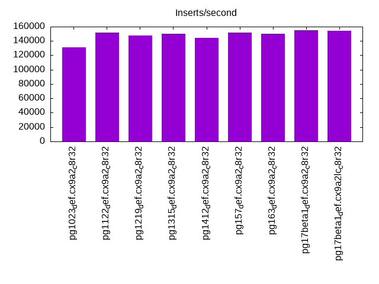

Introduction
This is a report for the insert benchmark with 50M docs and 1 client(s). It is generated by scripts (bash, awk, sed) and Tufte might not be impressed. An overview of the insert benchmark is here and a short update is here. Below, by DBMS, I mean DBMS+version.config. An example is my8020.c10b40 where my means MySQL, 8020 is version 8.0.20 and c10b40 is the name for the configuration file.
The test server has 8 AMD cores, 32G RAM and an NVMe SSD. It is described here as the ASUS PN53. The benchmark was run with 1 client and there were 1 or 3 connections per client (1 for queries or inserts without rate limits, 1+1 for rate limited inserts+deletes). It uses 1 table. It loads 50M rows per table without secondary indexes, creates 3 secondary indexes per table, then inserts 40m+10m rows per table with a delete per insert to avoid growing the table. It then does 6 read+write tests for 1800s each that do queries as fast as possible with 100,100,500,500,1000,1000 inserts/s and the same for deletes/s per client concurrent with the queries. The database is cached in memory. Clients and the DBMS share one server. The per-database configs are in the per-database subdirectories here.
The tested DBMS are:
- pg1023_def.cx9a2_c8r32 - Postgres 10.23 with the cx9a2_c8r32 config
- pg1122_def.cx9a2_c8r32 - Postgres 11.22 with the cx9a2_c8r32 config
- pg1219_def.cx9a2_c8r32 - Postgres 12.19 with the cx9a2_c8r32 config
- pg1315_def.cx9a2_c8r32 - Postgres 13.15 with the cx9a2_c8r32 config
- pg1412_def.cx9a2_c8r32 - Postgres 14.12 with the cx9a2_c8r32 config
- pg157_def.cx9a2_c8r32 - Postgres 15.7 with the cx9a2_c8r32 config
- pg163_def.cx9a2_c8r32 - Postgres 16.3 with the cx9a2_c8r32 config
- pg17beta1_def.cx9a2_c8r32 - Postgres 17beta1 with the cx9a2_c8r32 config
- pg17beta1_def.cx9a2lc_c8r32 - Postgres 17beta1 with the cx9a2lc_c8r32 config
Contents
- Summary
- l.i0: load without secondary indexes
- l.x: create secondary indexes
- l.i1: continue load after secondary indexes created with 50 inserts per transaction
- l.i2: continue load after secondary indexes created with 5 inserts per transaction
- qr100.L1: range queries with 100 insert/s per client
- qp100.L2: point queries with 100 insert/s per client
- qr500.L3: range queries with 500 insert/s per client
- qp500.L4: point queries with 500 insert/s per client
- qr1000.L5: range queries with 1000 insert/s per client
- qp1000.L6: point queries with 1000 insert/s per client
Summary
The numbers are inserts/s for l.i0, l.i1 and l.i2, indexed docs (or rows) /s for l.x and queries/s for qr100, qp100 thru qr1000, qp1000" The values are the average rate over the entire test for inserts (IPS) and queries (QPS). The range of values for IPS and QPS is split into 3 parts: bottom 25%, middle 50%, top 25%. Values in the bottom 25% have a red background, values in the top 25% have a green background and values in the middle have no color. A gray background is used for values that can be ignored because the DBMS did not sustain the target insert rate. Red backgrounds are not used when the minimum value is within 80% of the max value.
| dbms | l.i0 | l.x | l.i1 | l.i2 | qr100 | qp100 | qr500 | qp500 | qr1000 | qp1000 |
|---|---|---|---|---|---|---|---|---|---|---|
| pg1023_def.cx9a2_c8r32 | 130890 | 357144 | 5622 | 644 | 14855 | 6407 | 13280 | 6378 | 13018 | 6359 |
| pg1122_def.cx9a2_c8r32 | 151515 | 347223 | 6187 | 666 | 15235 | 6412 | 13689 | 6402 | 13269 | 6372 |
| pg1219_def.cx9a2_c8r32 | 147929 | 349651 | 13307 | 1558 | 15016 | 6395 | 13972 | 6358 | 13814 | 6334 |
| pg1315_def.cx9a2_c8r32 | 150150 | 347223 | 13188 | 1466 | 15227 | 6383 | 14142 | 6366 | 13874 | 6348 |
| pg1412_def.cx9a2_c8r32 | 144092 | 342466 | 12019 | 1380 | 15205 | 6340 | 14252 | 6272 | 13992 | 6217 |
| pg157_def.cx9a2_c8r32 | 151515 | 364964 | 11208 | 1311 | 15378 | 6253 | 14242 | 6176 | 14070 | 6206 |
| pg163_def.cx9a2_c8r32 | 149700 | 381680 | 12551 | 1460 | 15306 | 6262 | 14403 | 6248 | 14061 | 6154 |
| pg17beta1_def.cx9a2_c8r32 | 154799 | 381680 | 11182 | 1286 | 15516 | 6220 | 14272 | 6258 | 14016 | 6149 |
| pg17beta1_def.cx9a2lc_c8r32 | 154321 | 378789 | 12886 | 1428 | 15595 | 6176 | 14261 | 6174 | 13902 | 6124 |
This table has relative throughput, throughput for the DBMS relative to the DBMS in the first line, using the absolute throughput from the previous table. Values less than 0.95 have a yellow background. Values greater than 1.05 have a blue background.
| dbms | l.i0 | l.x | l.i1 | l.i2 | qr100 | qp100 | qr500 | qp500 | qr1000 | qp1000 |
|---|---|---|---|---|---|---|---|---|---|---|
| pg1023_def.cx9a2_c8r32 | 1.00 | 1.00 | 1.00 | 1.00 | 1.00 | 1.00 | 1.00 | 1.00 | 1.00 | 1.00 |
| pg1122_def.cx9a2_c8r32 | 1.16 | 0.97 | 1.10 | 1.03 | 1.03 | 1.00 | 1.03 | 1.00 | 1.02 | 1.00 |
| pg1219_def.cx9a2_c8r32 | 1.13 | 0.98 | 2.37 | 2.42 | 1.01 | 1.00 | 1.05 | 1.00 | 1.06 | 1.00 |
| pg1315_def.cx9a2_c8r32 | 1.15 | 0.97 | 2.35 | 2.28 | 1.03 | 1.00 | 1.06 | 1.00 | 1.07 | 1.00 |
| pg1412_def.cx9a2_c8r32 | 1.10 | 0.96 | 2.14 | 2.14 | 1.02 | 0.99 | 1.07 | 0.98 | 1.07 | 0.98 |
| pg157_def.cx9a2_c8r32 | 1.16 | 1.02 | 1.99 | 2.04 | 1.04 | 0.98 | 1.07 | 0.97 | 1.08 | 0.98 |
| pg163_def.cx9a2_c8r32 | 1.14 | 1.07 | 2.23 | 2.27 | 1.03 | 0.98 | 1.08 | 0.98 | 1.08 | 0.97 |
| pg17beta1_def.cx9a2_c8r32 | 1.18 | 1.07 | 1.99 | 2.00 | 1.04 | 0.97 | 1.07 | 0.98 | 1.08 | 0.97 |
| pg17beta1_def.cx9a2lc_c8r32 | 1.18 | 1.06 | 2.29 | 2.22 | 1.05 | 0.96 | 1.07 | 0.97 | 1.07 | 0.96 |
This lists the average rate of inserts/s for the tests that do inserts concurrent with queries. For such tests the query rate is listed in the table above. The read+write tests are setup so that the insert rate should match the target rate every second. Cells that are not at least 95% of the target have a red background to indicate a failure to satisfy the target.
| dbms | qr100.L1 | qp100.L2 | qr500.L3 | qp500.L4 | qr1000.L5 | qp1000.L6 |
|---|---|---|---|---|---|---|
| pg1023_def.cx9a2_c8r32 | 100 | 100 | 499 | 499 | 999 | 999 |
| pg1122_def.cx9a2_c8r32 | 100 | 100 | 499 | 499 | 999 | 999 |
| pg1219_def.cx9a2_c8r32 | 100 | 100 | 499 | 499 | 999 | 999 |
| pg1315_def.cx9a2_c8r32 | 100 | 100 | 499 | 499 | 999 | 999 |
| pg1412_def.cx9a2_c8r32 | 100 | 100 | 499 | 499 | 999 | 999 |
| pg157_def.cx9a2_c8r32 | 100 | 100 | 499 | 499 | 999 | 999 |
| pg163_def.cx9a2_c8r32 | 100 | 100 | 499 | 499 | 999 | 999 |
| pg17beta1_def.cx9a2_c8r32 | 100 | 100 | 499 | 499 | 999 | 999 |
| pg17beta1_def.cx9a2lc_c8r32 | 100 | 100 | 499 | 499 | 999 | 999 |
| target | 100 | 100 | 500 | 500 | 1000 | 1000 |
l.i0
l.i0: load without secondary indexes. Graphs for performance per 1-second interval are here.
Average throughput:
Insert response time histogram: each cell has the percentage of responses that take <= the time in the header and max is the max response time in seconds. For the max column values in the top 25% of the range have a red background and in the bottom 25% of the range have a green background. The red background is not used when the min value is within 80% of the max value.
| dbms | 256us | 1ms | 4ms | 16ms | 64ms | 256ms | 1s | 4s | 16s | gt | max |
|---|---|---|---|---|---|---|---|---|---|---|---|
| pg1023_def.cx9a2_c8r32 | 99.897 | 0.103 | 0.002 | ||||||||
| pg1122_def.cx9a2_c8r32 | 99.927 | 0.073 | 0.002 | ||||||||
| pg1219_def.cx9a2_c8r32 | 99.917 | 0.083 | 0.002 | ||||||||
| pg1315_def.cx9a2_c8r32 | 99.912 | 0.088 | 0.002 | ||||||||
| pg1412_def.cx9a2_c8r32 | 99.908 | 0.092 | 0.002 | ||||||||
| pg157_def.cx9a2_c8r32 | 99.931 | 0.069 | 0.002 | ||||||||
| pg163_def.cx9a2_c8r32 | 99.932 | 0.068 | 0.002 | ||||||||
| pg17beta1_def.cx9a2_c8r32 | 99.924 | 0.076 | 0.002 | ||||||||
| pg17beta1_def.cx9a2lc_c8r32 | 99.925 | 0.075 | 0.002 |
Performance metrics for the DBMS listed above. Some are normalized by throughput, others are not. Legend for results is here.
ips qps rps rmbps wps wmbps rpq rkbpq wpi wkbpi csps cpups cspq cpupq dbgb1 dbgb2 rss maxop p50 p99 tag 130890 0 0 0.0 487.5 55.9 0.000 0.000 0.004 0.437 16508 20.6 0.126 13 4.8 13.0 0.5 0.002 131355 128560 pg1023_def.cx9a2_c8r32 151515 0 0 0.0 560.9 64.2 0.000 0.000 0.004 0.434 18854 22.1 0.124 12 4.8 13.0 0.8 0.002 152332 150536 pg1122_def.cx9a2_c8r32 147929 0 0 0.0 543.4 62.3 0.000 0.000 0.004 0.431 18409 22.0 0.124 12 4.8 13.0 4.7 0.002 147887 146341 pg1219_def.cx9a2_c8r32 150150 0 0 0.0 556.6 63.8 0.000 0.000 0.004 0.435 18748 21.6 0.125 12 4.8 13.0 4.8 0.002 150933 149438 pg1315_def.cx9a2_c8r32 144092 0 0 0.0 541.3 62.1 0.000 0.000 0.004 0.442 18078 21.6 0.125 12 4.8 13.0 4.6 0.002 144543 141844 pg1412_def.cx9a2_c8r32 151515 0 0 0.0 560.9 64.3 0.000 0.000 0.004 0.435 18828 21.4 0.124 11 4.8 13.0 0.4 0.002 151936 150336 pg157_def.cx9a2_c8r32 149700 0 0 0.0 553.3 63.4 0.000 0.000 0.004 0.434 18606 22.3 0.124 12 4.8 13.0 0.4 0.002 149980 148441 pg163_def.cx9a2_c8r32 154799 0 0 0.0 571.0 65.5 0.000 0.000 0.004 0.433 16548 21.4 0.107 11 4.8 13.0 0.4 0.002 154733 153534 pg17beta1_def.cx9a2_c8r32 154321 0 0 0.0 571.9 65.6 0.000 0.000 0.004 0.435 16610 21.4 0.108 11 4.8 13.0 4.5 0.002 155129 153587 pg17beta1_def.cx9a2lc_c8r32
l.x
l.x: create secondary indexes.
Average throughput:
Performance metrics for the DBMS listed above. Some are normalized by throughput, others are not. Legend for results is here.
ips qps rps rmbps wps wmbps rpq rkbpq wpi wkbpi csps cpups cspq cpupq dbgb1 dbgb2 rss maxop p50 p99 tag 357144 0 0 0.0 990.4 122.4 0.000 0.000 0.003 0.351 670 11.7 0.002 3 9.6 22.2 5.0 0.002 NA NA pg1023_def.cx9a2_c8r32 347223 0 0 0.0 829.3 102.6 0.000 0.000 0.002 0.303 600 11.7 0.002 3 9.6 22.2 5.0 0.002 NA NA pg1122_def.cx9a2_c8r32 349651 0 0 0.0 841.8 104.1 0.000 0.000 0.002 0.305 642 11.7 0.002 3 9.6 22.2 5.0 0.002 NA NA pg1219_def.cx9a2_c8r32 347223 0 0 0.0 830.9 102.8 0.000 0.000 0.002 0.303 592 11.7 0.002 3 9.6 22.2 5.0 0.002 NA NA pg1315_def.cx9a2_c8r32 342466 0 0 0.0 917.8 113.4 0.000 0.000 0.003 0.339 637 11.6 0.002 3 9.6 22.2 5.0 0.002 NA NA pg1412_def.cx9a2_c8r32 364964 0 0 0.0 882.2 109.1 0.000 0.000 0.002 0.306 580 11.7 0.002 3 9.6 22.2 5.0 0.002 NA NA pg157_def.cx9a2_c8r32 381680 0 0 0.0 983.1 121.5 0.000 0.000 0.003 0.326 647 11.8 0.002 2 9.6 22.2 5.0 0.002 NA NA pg163_def.cx9a2_c8r32 381680 0 0 0.0 936.5 115.8 0.000 0.000 0.002 0.311 680 11.7 0.002 2 9.6 22.1 5.0 0.002 NA NA pg17beta1_def.cx9a2_c8r32 378789 0 0 0.0 906.4 112.1 0.000 0.000 0.002 0.303 661 11.7 0.002 2 9.6 22.2 5.0 0.002 NA NA pg17beta1_def.cx9a2lc_c8r32
l.i1
l.i1: continue load after secondary indexes created with 50 inserts per transaction. Graphs for performance per 1-second interval are here.
Average throughput:

Insert response time histogram: each cell has the percentage of responses that take <= the time in the header and max is the max response time in seconds. For the max column values in the top 25% of the range have a red background and in the bottom 25% of the range have a green background. The red background is not used when the min value is within 80% of the max value.
| dbms | 256us | 1ms | 4ms | 16ms | 64ms | 256ms | 1s | 4s | 16s | gt | max |
|---|---|---|---|---|---|---|---|---|---|---|---|
| pg1023_def.cx9a2_c8r32 | 2.691 | 97.308 | 0.001 | 0.014 | |||||||
| pg1122_def.cx9a2_c8r32 | 9.411 | 90.588 | 0.001 | 0.014 | |||||||
| pg1219_def.cx9a2_c8r32 | 21.722 | 78.278 | 0.001 | 0.007 | |||||||
| pg1315_def.cx9a2_c8r32 | 16.208 | 83.771 | 0.020 | 0.001 | 0.055 | ||||||
| pg1412_def.cx9a2_c8r32 | 19.321 | 80.659 | 0.007 | 0.013 | nonzero | 0.073 | |||||
| pg157_def.cx9a2_c8r32 | 20.915 | 79.085 | nonzero | 0.007 | |||||||
| pg163_def.cx9a2_c8r32 | 22.208 | 77.787 | 0.004 | nonzero | 0.046 | ||||||
| pg17beta1_def.cx9a2_c8r32 | 28.062 | 71.936 | 0.001 | 0.001 | 0.029 | ||||||
| pg17beta1_def.cx9a2lc_c8r32 | 16.750 | 83.248 | 0.001 | 0.001 | 0.032 |
Delete response time histogram: each cell has the percentage of responses that take <= the time in the header and max is the max response time in seconds. For the max column values in the top 25% of the range have a red background and in the bottom 25% of the range have a green background. The red background is not used when the min value is within 80% of the max value.
| dbms | 256us | 1ms | 4ms | 16ms | 64ms | 256ms | 1s | 4s | 16s | gt | max |
|---|---|---|---|---|---|---|---|---|---|---|---|
| pg1023_def.cx9a2_c8r32 | 4.496 | 23.555 | 58.794 | 13.155 | 0.043 | ||||||
| pg1122_def.cx9a2_c8r32 | 4.986 | 20.484 | 74.529 | 0.001 | 0.019 | ||||||
| pg1219_def.cx9a2_c8r32 | 14.238 | 36.262 | 49.500 | nonzero | 0.016 | ||||||
| pg1315_def.cx9a2_c8r32 | 13.609 | 32.302 | 54.086 | 0.003 | 0.034 | ||||||
| pg1412_def.cx9a2_c8r32 | 12.263 | 30.712 | 57.015 | 0.010 | 0.044 | ||||||
| pg157_def.cx9a2_c8r32 | 12.628 | 35.303 | 52.069 | 0.015 | |||||||
| pg163_def.cx9a2_c8r32 | 14.740 | 38.674 | 46.585 | 0.002 | 0.045 | ||||||
| pg17beta1_def.cx9a2_c8r32 | 11.229 | 45.669 | 43.100 | 0.001 | 0.031 | ||||||
| pg17beta1_def.cx9a2lc_c8r32 | 12.718 | 41.638 | 45.643 | 0.001 | 0.027 |
Performance metrics for the DBMS listed above. Some are normalized by throughput, others are not. Legend for results is here.
ips qps rps rmbps wps wmbps rpq rkbpq wpi wkbpi csps cpups cspq cpupq dbgb1 dbgb2 rss maxop p50 p99 tag 5622 0 0 0.0 110.1 11.8 0.000 0.000 0.020 2.154 3262 15.8 0.580 225 12.6 46.0 11.7 0.014 3947 1748 pg1023_def.cx9a2_c8r32 6187 0 0 0.0 103.7 11.0 0.000 0.000 0.017 1.823 3502 16.0 0.566 207 12.6 38.6 9.1 0.014 4747 3446 pg1122_def.cx9a2_c8r32 13307 0 0 0.0 197.1 21.7 0.000 0.000 0.015 1.671 7121 19.7 0.535 118 12.5 50.2 10.1 0.007 9190 5594 pg1219_def.cx9a2_c8r32 13188 0 0 0.0 194.0 21.5 0.000 0.000 0.015 1.666 7051 19.7 0.535 120 12.5 50.0 8.3 0.055 9589 7042 pg1315_def.cx9a2_c8r32 12019 0 0 0.0 182.7 20.1 0.000 0.000 0.015 1.716 6392 18.4 0.532 122 12.2 47.5 10.0 0.073 8940 5394 pg1412_def.cx9a2_c8r32 11208 0 0 0.0 168.5 18.4 0.000 0.000 0.015 1.684 6022 18.0 0.537 128 12.3 46.3 10.6 0.007 7744 4545 pg157_def.cx9a2_c8r32 12551 0 0 0.0 193.2 21.2 0.000 0.000 0.015 1.732 6731 18.5 0.536 118 12.3 48.5 8.8 0.046 8640 4845 pg163_def.cx9a2_c8r32 11182 0 0 0.0 171.0 18.8 0.000 0.000 0.015 1.724 5203 17.7 0.465 127 12.2 45.8 8.5 0.029 7742 3496 pg17beta1_def.cx9a2_c8r32 12886 0 0 0.0 189.9 21.1 0.000 0.000 0.015 1.674 5970 18.8 0.463 117 12.2 48.9 9.5 0.032 10438 6793 pg17beta1_def.cx9a2lc_c8r32
l.i2
l.i2: continue load after secondary indexes created with 5 inserts per transaction. Graphs for performance per 1-second interval are here.
Average throughput:
Insert response time histogram: each cell has the percentage of responses that take <= the time in the header and max is the max response time in seconds. For the max column values in the top 25% of the range have a red background and in the bottom 25% of the range have a green background. The red background is not used when the min value is within 80% of the max value.
| dbms | 256us | 1ms | 4ms | 16ms | 64ms | 256ms | 1s | 4s | 16s | gt | max |
|---|---|---|---|---|---|---|---|---|---|---|---|
| pg1023_def.cx9a2_c8r32 | 12.405 | 87.595 | nonzero | nonzero | 0.004 | ||||||
| pg1122_def.cx9a2_c8r32 | 11.388 | 88.611 | nonzero | 0.002 | |||||||
| pg1219_def.cx9a2_c8r32 | 26.790 | 73.210 | nonzero | 0.002 | |||||||
| pg1315_def.cx9a2_c8r32 | 25.803 | 74.196 | 0.001 | nonzero | 0.011 | ||||||
| pg1412_def.cx9a2_c8r32 | 20.682 | 79.317 | 0.001 | 0.003 | |||||||
| pg157_def.cx9a2_c8r32 | 22.290 | 77.710 | 0.001 | 0.003 | |||||||
| pg163_def.cx9a2_c8r32 | 24.161 | 75.838 | 0.001 | nonzero | 0.006 | ||||||
| pg17beta1_def.cx9a2_c8r32 | 29.143 | 70.857 | nonzero | 0.002 | |||||||
| pg17beta1_def.cx9a2lc_c8r32 | 20.921 | 79.079 | nonzero | 0.004 |
Delete response time histogram: each cell has the percentage of responses that take <= the time in the header and max is the max response time in seconds. For the max column values in the top 25% of the range have a red background and in the bottom 25% of the range have a green background. The red background is not used when the min value is within 80% of the max value.
| dbms | 256us | 1ms | 4ms | 16ms | 64ms | 256ms | 1s | 4s | 16s | gt | max |
|---|---|---|---|---|---|---|---|---|---|---|---|
| pg1023_def.cx9a2_c8r32 | 0.430 | 6.113 | 13.772 | 79.684 | 0.001 | 0.027 | |||||
| pg1122_def.cx9a2_c8r32 | 0.499 | 6.045 | 10.204 | 83.251 | nonzero | 0.027 | |||||
| pg1219_def.cx9a2_c8r32 | 1.550 | 17.824 | 43.919 | 36.707 | nonzero | 0.018 | |||||
| pg1315_def.cx9a2_c8r32 | 1.463 | 16.178 | 39.236 | 43.122 | nonzero | 0.020 | |||||
| pg1412_def.cx9a2_c8r32 | 0.878 | 14.605 | 41.221 | 43.296 | nonzero | 0.018 | |||||
| pg157_def.cx9a2_c8r32 | 1.094 | 14.546 | 31.433 | 52.926 | 0.012 | ||||||
| pg163_def.cx9a2_c8r32 | 0.766 | 17.282 | 39.418 | 42.534 | 0.012 | ||||||
| pg17beta1_def.cx9a2_c8r32 | 0.983 | 16.375 | 25.948 | 56.694 | nonzero | 0.020 | |||||
| pg17beta1_def.cx9a2lc_c8r32 | 1.290 | 10.215 | 50.754 | 37.740 | nonzero | 0.019 |
Performance metrics for the DBMS listed above. Some are normalized by throughput, others are not. Legend for results is here.
ips qps rps rmbps wps wmbps rpq rkbpq wpi wkbpi csps cpups cspq cpupq dbgb1 dbgb2 rss maxop p50 p99 tag 644 0 0 0.0 70.3 4.3 0.000 0.000 0.109 6.826 3529 13.2 5.480 1640 13.1 39.3 8.4 0.004 509 335 pg1023_def.cx9a2_c8r32 666 0 0 0.0 69.8 4.5 0.000 0.000 0.105 6.879 3627 13.3 5.450 1599 13.1 33.1 8.5 0.002 524 345 pg1122_def.cx9a2_c8r32 1558 0 0 0.0 70.4 6.2 0.000 0.000 0.045 4.087 7859 14.8 5.046 760 12.9 49.7 1.8 0.002 1174 819 pg1219_def.cx9a2_c8r32 1466 0 0 0.0 70.2 6.0 0.000 0.000 0.048 4.166 7450 14.7 5.081 802 12.9 49.8 10.8 0.011 1084 784 pg1315_def.cx9a2_c8r32 1380 0 0 0.0 60.2 5.4 0.000 0.000 0.044 3.998 6811 14.4 4.934 835 12.6 45.4 0.4 0.003 1084 729 pg1412_def.cx9a2_c8r32 1311 0 0 0.0 64.4 5.4 0.000 0.000 0.049 4.233 6424 14.3 4.900 873 12.7 45.5 8.3 0.003 989 719 pg157_def.cx9a2_c8r32 1460 0 0 0.0 53.1 5.3 0.000 0.000 0.036 3.739 7108 14.5 4.870 795 12.7 48.9 11.9 0.006 1104 749 pg163_def.cx9a2_c8r32 1286 0 0 0.0 56.3 5.3 0.000 0.000 0.044 4.235 5338 14.0 4.151 871 12.6 45.9 0.4 0.002 884 579 pg17beta1_def.cx9a2_c8r32 1428 0 0 0.0 67.2 5.9 0.000 0.000 0.047 4.216 5908 14.3 4.137 801 12.6 49.4 0.4 0.004 1090 724 pg17beta1_def.cx9a2lc_c8r32
qr100.L1
qr100.L1: range queries with 100 insert/s per client. Graphs for performance per 1-second interval are here.
Average throughput:

Query response time histogram: each cell has the percentage of responses that take <= the time in the header and max is the max response time in seconds. For max values in the top 25% of the range have a red background and in the bottom 25% of the range have a green background. The red background is not used when the min value is within 80% of the max value.
| dbms | 256us | 1ms | 4ms | 16ms | 64ms | 256ms | 1s | 4s | 16s | gt | max |
|---|---|---|---|---|---|---|---|---|---|---|---|
| pg1023_def.cx9a2_c8r32 | 100.000 | nonzero | nonzero | 0.002 | |||||||
| pg1122_def.cx9a2_c8r32 | 100.000 | nonzero | nonzero | 0.001 | |||||||
| pg1219_def.cx9a2_c8r32 | 100.000 | nonzero | nonzero | 0.002 | |||||||
| pg1315_def.cx9a2_c8r32 | 100.000 | nonzero | nonzero | 0.001 | |||||||
| pg1412_def.cx9a2_c8r32 | 100.000 | nonzero | nonzero | nonzero | 0.010 | ||||||
| pg157_def.cx9a2_c8r32 | 100.000 | nonzero | nonzero | 0.001 | |||||||
| pg163_def.cx9a2_c8r32 | 100.000 | nonzero | nonzero | 0.001 | |||||||
| pg17beta1_def.cx9a2_c8r32 | 100.000 | nonzero | nonzero | 0.004 | |||||||
| pg17beta1_def.cx9a2lc_c8r32 | 100.000 | nonzero | nonzero | nonzero | 0.004 |
Insert response time histogram: each cell has the percentage of responses that take <= the time in the header and max is the max response time in seconds. For max values in the top 25% of the range have a red background and in the bottom 25% of the range have a green background. The red background is not used when the min value is within 80% of the max value.
| dbms | 256us | 1ms | 4ms | 16ms | 64ms | 256ms | 1s | 4s | 16s | gt | max |
|---|---|---|---|---|---|---|---|---|---|---|---|
| pg1023_def.cx9a2_c8r32 | 99.972 | 0.028 | 0.006 | ||||||||
| pg1122_def.cx9a2_c8r32 | 99.944 | 0.056 | 0.006 | ||||||||
| pg1219_def.cx9a2_c8r32 | 99.944 | 0.056 | 0.006 | ||||||||
| pg1315_def.cx9a2_c8r32 | 99.944 | 0.056 | 0.006 | ||||||||
| pg1412_def.cx9a2_c8r32 | 99.972 | 0.028 | 0.006 | ||||||||
| pg157_def.cx9a2_c8r32 | 99.944 | 0.056 | 0.006 | ||||||||
| pg163_def.cx9a2_c8r32 | 99.972 | 0.028 | 0.006 | ||||||||
| pg17beta1_def.cx9a2_c8r32 | 99.944 | 0.056 | 0.006 | ||||||||
| pg17beta1_def.cx9a2lc_c8r32 | 99.944 | 0.056 | 0.006 |
Delete response time histogram: each cell has the percentage of responses that take <= the time in the header and max is the max response time in seconds. For max values in the top 25% of the range have a red background and in the bottom 25% of the range have a green background. The red background is not used when the min value is within 80% of the max value.
| dbms | 256us | 1ms | 4ms | 16ms | 64ms | 256ms | 1s | 4s | 16s | gt | max |
|---|---|---|---|---|---|---|---|---|---|---|---|
| pg1023_def.cx9a2_c8r32 | 23.000 | 77.000 | 0.004 | ||||||||
| pg1122_def.cx9a2_c8r32 | 21.639 | 78.361 | 0.004 | ||||||||
| pg1219_def.cx9a2_c8r32 | 53.750 | 46.250 | 0.002 | ||||||||
| pg1315_def.cx9a2_c8r32 | 55.444 | 44.556 | 0.002 | ||||||||
| pg1412_def.cx9a2_c8r32 | 45.806 | 54.194 | 0.002 | ||||||||
| pg157_def.cx9a2_c8r32 | 54.139 | 45.861 | 0.002 | ||||||||
| pg163_def.cx9a2_c8r32 | 50.361 | 49.639 | 0.002 | ||||||||
| pg17beta1_def.cx9a2_c8r32 | 51.250 | 48.750 | 0.002 | ||||||||
| pg17beta1_def.cx9a2lc_c8r32 | 47.389 | 52.611 | 0.002 |
Performance metrics for the DBMS listed above. Some are normalized by throughput, others are not. Legend for results is here.
ips qps rps rmbps wps wmbps rpq rkbpq wpi wkbpi csps cpups cspq cpupq dbgb1 dbgb2 rss maxop p50 p99 tag 100 14855 0 0.0 15.6 0.9 0.000 0.000 0.156 9.556 56880 12.7 3.829 68 13.1 37.8 0.3 0.002 14864 14560 pg1023_def.cx9a2_c8r32 100 15235 0 0.0 15.2 0.9 0.000 0.000 0.152 9.479 58327 12.8 3.828 67 13.1 33.1 0.3 0.001 15231 14959 pg1122_def.cx9a2_c8r32 100 15016 0 0.0 15.3 0.9 0.000 0.000 0.153 9.467 57499 12.8 3.829 68 12.9 44.5 0.3 0.002 15023 14800 pg1219_def.cx9a2_c8r32 100 15227 0 0.0 15.3 0.9 0.000 0.000 0.153 9.446 58303 12.9 3.829 68 12.9 44.6 0.3 0.001 15231 15024 pg1315_def.cx9a2_c8r32 100 15205 0 0.0 15.8 0.9 0.000 0.000 0.158 9.708 58172 12.9 3.826 68 12.7 40.7 0.3 0.010 15200 14973 pg1412_def.cx9a2_c8r32 100 15378 0 0.0 16.1 0.9 0.000 0.000 0.162 9.668 58811 12.7 3.824 66 12.7 40.9 0.3 0.001 15375 15199 pg157_def.cx9a2_c8r32 100 15306 0 0.0 16.1 0.9 0.000 0.000 0.161 9.687 58573 12.8 3.827 67 12.7 43.8 0.3 0.001 15312 15088 pg163_def.cx9a2_c8r32 100 15516 0 0.0 15.2 1.0 0.000 0.000 0.152 9.748 59337 12.7 3.824 65 12.7 41.2 0.3 0.004 15519 15311 pg17beta1_def.cx9a2_c8r32 100 15595 0 0.0 15.3 1.0 0.000 0.000 0.153 9.776 59627 12.7 3.823 65 12.7 44.2 0.3 0.004 15599 15359 pg17beta1_def.cx9a2lc_c8r32
qp100.L2
qp100.L2: point queries with 100 insert/s per client. Graphs for performance per 1-second interval are here.
Average throughput:
Query response time histogram: each cell has the percentage of responses that take <= the time in the header and max is the max response time in seconds. For max values in the top 25% of the range have a red background and in the bottom 25% of the range have a green background. The red background is not used when the min value is within 80% of the max value.
| dbms | 256us | 1ms | 4ms | 16ms | 64ms | 256ms | 1s | 4s | 16s | gt | max |
|---|---|---|---|---|---|---|---|---|---|---|---|
| pg1023_def.cx9a2_c8r32 | 99.978 | 0.021 | nonzero | 0.004 | |||||||
| pg1122_def.cx9a2_c8r32 | 99.981 | 0.019 | nonzero | 0.002 | |||||||
| pg1219_def.cx9a2_c8r32 | 99.978 | 0.022 | nonzero | 0.001 | |||||||
| pg1315_def.cx9a2_c8r32 | 99.977 | 0.023 | nonzero | 0.001 | |||||||
| pg1412_def.cx9a2_c8r32 | 99.983 | 0.017 | nonzero | nonzero | 0.011 | ||||||
| pg157_def.cx9a2_c8r32 | 99.985 | 0.015 | nonzero | 0.002 | |||||||
| pg163_def.cx9a2_c8r32 | 99.985 | 0.015 | nonzero | 0.002 | |||||||
| pg17beta1_def.cx9a2_c8r32 | 99.984 | 0.016 | nonzero | 0.002 | |||||||
| pg17beta1_def.cx9a2lc_c8r32 | 99.983 | 0.017 | nonzero | 0.002 |
Insert response time histogram: each cell has the percentage of responses that take <= the time in the header and max is the max response time in seconds. For max values in the top 25% of the range have a red background and in the bottom 25% of the range have a green background. The red background is not used when the min value is within 80% of the max value.
| dbms | 256us | 1ms | 4ms | 16ms | 64ms | 256ms | 1s | 4s | 16s | gt | max |
|---|---|---|---|---|---|---|---|---|---|---|---|
| pg1023_def.cx9a2_c8r32 | 99.944 | 0.056 | 0.006 | ||||||||
| pg1122_def.cx9a2_c8r32 | 99.972 | 0.028 | 0.006 | ||||||||
| pg1219_def.cx9a2_c8r32 | 99.944 | 0.056 | 0.006 | ||||||||
| pg1315_def.cx9a2_c8r32 | 99.944 | 0.056 | 0.006 | ||||||||
| pg1412_def.cx9a2_c8r32 | 99.944 | 0.056 | 0.006 | ||||||||
| pg157_def.cx9a2_c8r32 | 99.944 | 0.056 | 0.006 | ||||||||
| pg163_def.cx9a2_c8r32 | 99.944 | 0.056 | 0.006 | ||||||||
| pg17beta1_def.cx9a2_c8r32 | 99.944 | 0.056 | 0.006 | ||||||||
| pg17beta1_def.cx9a2lc_c8r32 | 99.972 | 0.028 | 0.005 |
Delete response time histogram: each cell has the percentage of responses that take <= the time in the header and max is the max response time in seconds. For max values in the top 25% of the range have a red background and in the bottom 25% of the range have a green background. The red background is not used when the min value is within 80% of the max value.
| dbms | 256us | 1ms | 4ms | 16ms | 64ms | 256ms | 1s | 4s | 16s | gt | max |
|---|---|---|---|---|---|---|---|---|---|---|---|
| pg1023_def.cx9a2_c8r32 | 48.667 | 51.333 | 0.008 | ||||||||
| pg1122_def.cx9a2_c8r32 | 51.611 | 48.389 | 0.008 | ||||||||
| pg1219_def.cx9a2_c8r32 | 0.806 | 99.167 | 0.028 | 0.008 | |||||||
| pg1315_def.cx9a2_c8r32 | 0.444 | 99.528 | 0.028 | 0.007 | |||||||
| pg1412_def.cx9a2_c8r32 | 99.972 | 0.028 | 0.007 | ||||||||
| pg157_def.cx9a2_c8r32 | 99.972 | 0.028 | 0.007 | ||||||||
| pg163_def.cx9a2_c8r32 | 0.028 | 99.944 | 0.028 | 0.007 | |||||||
| pg17beta1_def.cx9a2_c8r32 | 99.972 | 0.028 | 0.007 | ||||||||
| pg17beta1_def.cx9a2lc_c8r32 | 99.917 | 0.083 | 0.007 |
Performance metrics for the DBMS listed above. Some are normalized by throughput, others are not. Legend for results is here.
ips qps rps rmbps wps wmbps rpq rkbpq wpi wkbpi csps cpups cspq cpupq dbgb1 dbgb2 rss maxop p50 p99 tag 100 6407 0 0.0 89.1 2.0 0.000 0.000 0.892 20.127 26254 13.4 4.098 167 13.1 35.8 0.3 0.004 6409 6377 pg1023_def.cx9a2_c8r32 100 6412 0 0.0 88.6 2.0 0.000 0.000 0.888 20.153 26268 13.3 4.097 166 13.1 33.1 0.3 0.002 6409 6377 pg1122_def.cx9a2_c8r32 100 6395 0 0.0 88.5 2.0 0.000 0.000 0.887 20.117 26211 13.3 4.099 166 12.9 43.1 0.3 0.001 6393 6361 pg1219_def.cx9a2_c8r32 100 6383 0 0.0 88.6 2.0 0.000 0.000 0.888 20.093 26171 13.3 4.100 167 12.9 43.2 0.3 0.001 6393 6331 pg1315_def.cx9a2_c8r32 100 6340 0 0.0 87.2 2.0 0.000 0.000 0.874 20.153 26043 13.3 4.108 168 12.7 39.3 0.3 0.011 6345 6249 pg1412_def.cx9a2_c8r32 100 6253 0 0.0 87.5 2.0 0.000 0.000 0.877 20.056 25362 13.3 4.056 170 12.7 39.5 0.3 0.002 6249 6169 pg157_def.cx9a2_c8r32 100 6262 0 0.0 87.6 2.0 0.000 0.000 0.878 20.066 25398 13.4 4.056 171 12.7 42.4 0.3 0.002 6252 6153 pg163_def.cx9a2_c8r32 100 6220 0 0.0 85.8 2.0 0.000 0.000 0.859 20.115 25227 13.5 4.056 174 12.7 39.8 0.3 0.002 6217 6153 pg17beta1_def.cx9a2_c8r32 100 6176 0 0.0 86.2 2.0 0.000 0.000 0.864 20.131 25058 13.4 4.058 174 12.7 42.8 0.3 0.002 6172 6124 pg17beta1_def.cx9a2lc_c8r32
qr500.L3
qr500.L3: range queries with 500 insert/s per client. Graphs for performance per 1-second interval are here.
Average throughput:
Query response time histogram: each cell has the percentage of responses that take <= the time in the header and max is the max response time in seconds. For max values in the top 25% of the range have a red background and in the bottom 25% of the range have a green background. The red background is not used when the min value is within 80% of the max value.
| dbms | 256us | 1ms | 4ms | 16ms | 64ms | 256ms | 1s | 4s | 16s | gt | max |
|---|---|---|---|---|---|---|---|---|---|---|---|
| pg1023_def.cx9a2_c8r32 | 99.998 | 0.002 | nonzero | nonzero | 0.004 | ||||||
| pg1122_def.cx9a2_c8r32 | 99.998 | 0.002 | nonzero | 0.004 | |||||||
| pg1219_def.cx9a2_c8r32 | 99.998 | 0.002 | nonzero | 0.004 | |||||||
| pg1315_def.cx9a2_c8r32 | 99.999 | 0.001 | nonzero | nonzero | 0.004 | ||||||
| pg1412_def.cx9a2_c8r32 | 99.998 | 0.002 | nonzero | 0.004 | |||||||
| pg157_def.cx9a2_c8r32 | 99.998 | 0.002 | nonzero | nonzero | 0.004 | ||||||
| pg163_def.cx9a2_c8r32 | 99.998 | 0.001 | nonzero | nonzero | 0.004 | ||||||
| pg17beta1_def.cx9a2_c8r32 | 99.998 | 0.002 | nonzero | 0.004 | |||||||
| pg17beta1_def.cx9a2lc_c8r32 | 99.998 | 0.002 | nonzero | 0.004 |
Insert response time histogram: each cell has the percentage of responses that take <= the time in the header and max is the max response time in seconds. For max values in the top 25% of the range have a red background and in the bottom 25% of the range have a green background. The red background is not used when the min value is within 80% of the max value.
| dbms | 256us | 1ms | 4ms | 16ms | 64ms | 256ms | 1s | 4s | 16s | gt | max |
|---|---|---|---|---|---|---|---|---|---|---|---|
| pg1023_def.cx9a2_c8r32 | 2.289 | 97.706 | 0.006 | 0.005 | |||||||
| pg1122_def.cx9a2_c8r32 | 13.328 | 86.667 | 0.006 | 0.006 | |||||||
| pg1219_def.cx9a2_c8r32 | 17.144 | 82.844 | 0.011 | 0.006 | |||||||
| pg1315_def.cx9a2_c8r32 | 13.089 | 86.900 | 0.011 | 0.006 | |||||||
| pg1412_def.cx9a2_c8r32 | 14.306 | 85.683 | 0.011 | 0.006 | |||||||
| pg157_def.cx9a2_c8r32 | 28.606 | 71.383 | 0.011 | 0.006 | |||||||
| pg163_def.cx9a2_c8r32 | 23.300 | 76.689 | 0.011 | 0.006 | |||||||
| pg17beta1_def.cx9a2_c8r32 | 26.722 | 73.267 | 0.011 | 0.006 | |||||||
| pg17beta1_def.cx9a2lc_c8r32 | 25.183 | 74.806 | 0.011 | 0.005 |
Delete response time histogram: each cell has the percentage of responses that take <= the time in the header and max is the max response time in seconds. For max values in the top 25% of the range have a red background and in the bottom 25% of the range have a green background. The red background is not used when the min value is within 80% of the max value.
| dbms | 256us | 1ms | 4ms | 16ms | 64ms | 256ms | 1s | 4s | 16s | gt | max |
|---|---|---|---|---|---|---|---|---|---|---|---|
| pg1023_def.cx9a2_c8r32 | 16.611 | 83.389 | 0.013 | ||||||||
| pg1122_def.cx9a2_c8r32 | 14.783 | 85.217 | 0.014 | ||||||||
| pg1219_def.cx9a2_c8r32 | 94.461 | 5.539 | 0.011 | ||||||||
| pg1315_def.cx9a2_c8r32 | 93.289 | 6.711 | 0.011 | ||||||||
| pg1412_def.cx9a2_c8r32 | 88.561 | 11.439 | 0.011 | ||||||||
| pg157_def.cx9a2_c8r32 | 87.733 | 12.267 | 0.012 | ||||||||
| pg163_def.cx9a2_c8r32 | 92.567 | 7.433 | 0.011 | ||||||||
| pg17beta1_def.cx9a2_c8r32 | 86.050 | 13.950 | 0.011 | ||||||||
| pg17beta1_def.cx9a2lc_c8r32 | 84.006 | 15.994 | 0.011 |
Performance metrics for the DBMS listed above. Some are normalized by throughput, others are not. Legend for results is here.
ips qps rps rmbps wps wmbps rpq rkbpq wpi wkbpi csps cpups cspq cpupq dbgb1 dbgb2 rss maxop p50 p99 tag 499 13280 0 0.0 95.3 3.0 0.000 0.000 0.191 6.187 51125 13.4 3.850 81 13.1 34.4 0.8 0.004 13265 12482 pg1023_def.cx9a2_c8r32 499 13689 0 0.0 95.3 3.0 0.000 0.000 0.191 6.144 52708 13.3 3.850 78 13.1 33.1 0.8 0.004 13681 12898 pg1122_def.cx9a2_c8r32 499 13972 0 0.0 95.2 3.0 0.000 0.000 0.191 6.150 53747 12.8 3.847 73 12.9 41.7 0.8 0.004 13974 13393 pg1219_def.cx9a2_c8r32 499 14142 0 0.0 95.0 3.0 0.000 0.000 0.190 6.150 54394 12.9 3.846 73 12.9 41.7 0.8 0.004 14128 13553 pg1315_def.cx9a2_c8r32 499 14252 0 0.0 94.1 3.1 0.000 0.000 0.188 6.273 54721 12.9 3.840 72 12.7 37.9 0.7 0.004 14246 13601 pg1412_def.cx9a2_c8r32 499 14242 0 0.0 94.3 3.0 0.000 0.000 0.189 6.227 54679 12.9 3.839 72 12.7 38.0 0.7 0.004 14256 13649 pg157_def.cx9a2_c8r32 499 14403 0 0.0 94.3 3.0 0.000 0.000 0.189 6.244 55261 12.9 3.837 72 12.7 40.9 0.7 0.004 14416 13793 pg163_def.cx9a2_c8r32 499 14272 0 0.0 93.7 3.1 0.000 0.000 0.188 6.287 54729 12.9 3.835 72 12.8 38.4 5.8 0.004 14270 13585 pg17beta1_def.cx9a2_c8r32 499 14261 0 0.0 93.8 3.1 0.000 0.000 0.188 6.307 54684 12.9 3.834 72 12.7 41.5 2.7 0.004 14256 13569 pg17beta1_def.cx9a2lc_c8r32
qp500.L4
qp500.L4: point queries with 500 insert/s per client. Graphs for performance per 1-second interval are here.
Average throughput:
Query response time histogram: each cell has the percentage of responses that take <= the time in the header and max is the max response time in seconds. For max values in the top 25% of the range have a red background and in the bottom 25% of the range have a green background. The red background is not used when the min value is within 80% of the max value.
| dbms | 256us | 1ms | 4ms | 16ms | 64ms | 256ms | 1s | 4s | 16s | gt | max |
|---|---|---|---|---|---|---|---|---|---|---|---|
| pg1023_def.cx9a2_c8r32 | 99.961 | 0.039 | nonzero | 0.002 | |||||||
| pg1122_def.cx9a2_c8r32 | 99.968 | 0.032 | nonzero | 0.002 | |||||||
| pg1219_def.cx9a2_c8r32 | 99.961 | 0.039 | nonzero | 0.002 | |||||||
| pg1315_def.cx9a2_c8r32 | 99.961 | 0.039 | nonzero | 0.002 | |||||||
| pg1412_def.cx9a2_c8r32 | 99.969 | 0.031 | nonzero | 0.002 | |||||||
| pg157_def.cx9a2_c8r32 | 99.971 | 0.029 | nonzero | 0.002 | |||||||
| pg163_def.cx9a2_c8r32 | 99.968 | 0.032 | nonzero | 0.002 | |||||||
| pg17beta1_def.cx9a2_c8r32 | 99.974 | 0.026 | nonzero | 0.002 | |||||||
| pg17beta1_def.cx9a2lc_c8r32 | 99.972 | 0.028 | nonzero | 0.002 |
Insert response time histogram: each cell has the percentage of responses that take <= the time in the header and max is the max response time in seconds. For max values in the top 25% of the range have a red background and in the bottom 25% of the range have a green background. The red background is not used when the min value is within 80% of the max value.
| dbms | 256us | 1ms | 4ms | 16ms | 64ms | 256ms | 1s | 4s | 16s | gt | max |
|---|---|---|---|---|---|---|---|---|---|---|---|
| pg1023_def.cx9a2_c8r32 | 0.078 | 99.911 | 0.011 | 0.006 | |||||||
| pg1122_def.cx9a2_c8r32 | 5.489 | 94.500 | 0.011 | 0.006 | |||||||
| pg1219_def.cx9a2_c8r32 | 3.761 | 96.228 | 0.011 | 0.006 | |||||||
| pg1315_def.cx9a2_c8r32 | 6.367 | 93.622 | 0.011 | 0.006 | |||||||
| pg1412_def.cx9a2_c8r32 | 2.267 | 97.722 | 0.011 | 0.006 | |||||||
| pg157_def.cx9a2_c8r32 | 7.128 | 92.861 | 0.011 | 0.006 | |||||||
| pg163_def.cx9a2_c8r32 | 5.778 | 94.211 | 0.011 | 0.006 | |||||||
| pg17beta1_def.cx9a2_c8r32 | 6.700 | 93.289 | 0.011 | 0.006 | |||||||
| pg17beta1_def.cx9a2lc_c8r32 | 6.233 | 93.761 | 0.006 | 0.006 |
Delete response time histogram: each cell has the percentage of responses that take <= the time in the header and max is the max response time in seconds. For max values in the top 25% of the range have a red background and in the bottom 25% of the range have a green background. The red background is not used when the min value is within 80% of the max value.
| dbms | 256us | 1ms | 4ms | 16ms | 64ms | 256ms | 1s | 4s | 16s | gt | max |
|---|---|---|---|---|---|---|---|---|---|---|---|
| pg1023_def.cx9a2_c8r32 | 99.994 | 0.006 | 0.025 | ||||||||
| pg1122_def.cx9a2_c8r32 | 99.994 | 0.006 | 0.027 | ||||||||
| pg1219_def.cx9a2_c8r32 | 9.006 | 90.989 | 0.006 | 0.022 | |||||||
| pg1315_def.cx9a2_c8r32 | 5.656 | 94.339 | 0.006 | 0.023 | |||||||
| pg1412_def.cx9a2_c8r32 | 0.556 | 99.439 | 0.006 | 0.022 | |||||||
| pg157_def.cx9a2_c8r32 | 0.117 | 99.878 | 0.006 | 0.025 | |||||||
| pg163_def.cx9a2_c8r32 | 5.433 | 94.561 | 0.006 | 0.023 | |||||||
| pg17beta1_def.cx9a2_c8r32 | 0.439 | 99.556 | 0.006 | 0.023 | |||||||
| pg17beta1_def.cx9a2lc_c8r32 | 0.328 | 99.667 | 0.006 | 0.023 |
Performance metrics for the DBMS listed above. Some are normalized by throughput, others are not. Legend for results is here.
ips qps rps rmbps wps wmbps rpq rkbpq wpi wkbpi csps cpups cspq cpupq dbgb1 dbgb2 rss maxop p50 p99 tag 499 6378 0 0.0 69.6 4.2 0.000 0.000 0.139 8.543 26305 14.5 4.125 182 13.2 33.2 0.6 0.002 6377 6329 pg1023_def.cx9a2_c8r32 499 6402 0 0.0 70.0 4.2 0.000 0.000 0.140 8.531 26399 14.5 4.124 181 13.2 33.2 0.6 0.002 6396 6345 pg1122_def.cx9a2_c8r32 499 6358 0 0.0 69.8 4.2 0.000 0.000 0.140 8.513 26228 14.0 4.125 176 13.0 38.7 0.7 0.002 6361 6297 pg1219_def.cx9a2_c8r32 499 6366 0 0.0 69.7 4.2 0.000 0.000 0.140 8.519 26255 14.0 4.124 176 13.0 38.7 0.7 0.002 6377 6297 pg1315_def.cx9a2_c8r32 499 6272 0 0.0 68.5 4.1 0.000 0.000 0.137 8.502 25921 14.0 4.133 179 12.8 34.9 0.7 0.002 6269 6185 pg1412_def.cx9a2_c8r32 499 6176 0 0.0 68.9 4.1 0.000 0.000 0.138 8.487 25224 14.1 4.084 183 12.8 35.0 0.7 0.002 6172 6105 pg157_def.cx9a2_c8r32 499 6248 0 0.0 68.8 4.1 0.000 0.000 0.138 8.470 25511 14.0 4.083 179 12.8 37.9 4.5 0.002 6239 6137 pg163_def.cx9a2_c8r32 499 6258 0 0.0 67.7 4.1 0.000 0.000 0.136 8.497 25491 14.1 4.073 180 12.9 35.4 5.7 0.002 6251 6169 pg17beta1_def.cx9a2_c8r32 499 6174 0 0.0 67.7 4.1 0.000 0.000 0.136 8.501 25156 14.1 4.075 183 12.8 38.5 1.7 0.002 6169 6121 pg17beta1_def.cx9a2lc_c8r32
qr1000.L5
qr1000.L5: range queries with 1000 insert/s per client. Graphs for performance per 1-second interval are here.
Average throughput:
Query response time histogram: each cell has the percentage of responses that take <= the time in the header and max is the max response time in seconds. For max values in the top 25% of the range have a red background and in the bottom 25% of the range have a green background. The red background is not used when the min value is within 80% of the max value.
| dbms | 256us | 1ms | 4ms | 16ms | 64ms | 256ms | 1s | 4s | 16s | gt | max |
|---|---|---|---|---|---|---|---|---|---|---|---|
| pg1023_def.cx9a2_c8r32 | 99.997 | 0.003 | 0.001 | nonzero | nonzero | 0.018 | |||||
| pg1122_def.cx9a2_c8r32 | 99.997 | 0.002 | 0.001 | nonzero | 0.014 | ||||||
| pg1219_def.cx9a2_c8r32 | 99.998 | 0.002 | nonzero | nonzero | nonzero | 0.019 | |||||
| pg1315_def.cx9a2_c8r32 | 99.998 | 0.002 | nonzero | nonzero | 0.009 | ||||||
| pg1412_def.cx9a2_c8r32 | 99.998 | 0.002 | 0.001 | nonzero | 0.010 | ||||||
| pg157_def.cx9a2_c8r32 | 99.998 | 0.002 | nonzero | nonzero | nonzero | 0.017 | |||||
| pg163_def.cx9a2_c8r32 | 99.998 | 0.002 | 0.001 | nonzero | 0.015 | ||||||
| pg17beta1_def.cx9a2_c8r32 | 99.998 | 0.002 | nonzero | nonzero | 0.016 | ||||||
| pg17beta1_def.cx9a2lc_c8r32 | 99.998 | 0.002 | nonzero | nonzero | nonzero | 0.020 |
Insert response time histogram: each cell has the percentage of responses that take <= the time in the header and max is the max response time in seconds. For max values in the top 25% of the range have a red background and in the bottom 25% of the range have a green background. The red background is not used when the min value is within 80% of the max value.
| dbms | 256us | 1ms | 4ms | 16ms | 64ms | 256ms | 1s | 4s | 16s | gt | max |
|---|---|---|---|---|---|---|---|---|---|---|---|
| pg1023_def.cx9a2_c8r32 | 10.747 | 89.242 | 0.006 | 0.006 | 0.021 | ||||||
| pg1122_def.cx9a2_c8r32 | 35.186 | 64.803 | 0.003 | 0.008 | 0.020 | ||||||
| pg1219_def.cx9a2_c8r32 | 41.672 | 58.308 | 0.008 | 0.011 | 0.021 | ||||||
| pg1315_def.cx9a2_c8r32 | 45.347 | 54.647 | 0.006 | 0.006 | |||||||
| pg1412_def.cx9a2_c8r32 | 41.758 | 58.228 | 0.011 | 0.003 | 0.021 | ||||||
| pg157_def.cx9a2_c8r32 | 45.119 | 54.853 | 0.019 | 0.008 | 0.020 | ||||||
| pg163_def.cx9a2_c8r32 | 41.867 | 58.125 | 0.008 | 0.015 | |||||||
| pg17beta1_def.cx9a2_c8r32 | 51.817 | 48.161 | 0.019 | 0.003 | 0.021 | ||||||
| pg17beta1_def.cx9a2lc_c8r32 | 53.439 | 46.542 | 0.006 | 0.014 | 0.022 |
Delete response time histogram: each cell has the percentage of responses that take <= the time in the header and max is the max response time in seconds. For max values in the top 25% of the range have a red background and in the bottom 25% of the range have a green background. The red background is not used when the min value is within 80% of the max value.
| dbms | 256us | 1ms | 4ms | 16ms | 64ms | 256ms | 1s | 4s | 16s | gt | max |
|---|---|---|---|---|---|---|---|---|---|---|---|
| pg1023_def.cx9a2_c8r32 | 3.375 | 25.878 | 70.081 | 0.667 | 0.039 | ||||||
| pg1122_def.cx9a2_c8r32 | 3.328 | 27.325 | 68.789 | 0.558 | 0.039 | ||||||
| pg1219_def.cx9a2_c8r32 | 9.614 | 67.850 | 22.522 | 0.014 | 0.033 | ||||||
| pg1315_def.cx9a2_c8r32 | 9.981 | 67.283 | 22.733 | 0.003 | 0.033 | ||||||
| pg1412_def.cx9a2_c8r32 | 8.039 | 67.061 | 24.894 | 0.006 | 0.033 | ||||||
| pg157_def.cx9a2_c8r32 | 8.100 | 64.750 | 27.144 | 0.006 | 0.033 | ||||||
| pg163_def.cx9a2_c8r32 | 9.292 | 68.392 | 22.314 | 0.003 | 0.031 | ||||||
| pg17beta1_def.cx9a2_c8r32 | 8.678 | 64.936 | 26.378 | 0.008 | 0.033 | ||||||
| pg17beta1_def.cx9a2lc_c8r32 | 8.947 | 64.622 | 26.417 | 0.014 | 0.032 |
Performance metrics for the DBMS listed above. Some are normalized by throughput, others are not. Legend for results is here.
ips qps rps rmbps wps wmbps rpq rkbpq wpi wkbpi csps cpups cspq cpupq dbgb1 dbgb2 rss maxop p50 p99 tag 999 13018 0 0.0 86.2 4.7 0.000 0.000 0.086 4.817 50426 14.7 3.874 90 13.3 33.3 8.5 0.018 13185 10809 pg1023_def.cx9a2_c8r32 999 13269 0 0.0 86.1 4.7 0.000 0.000 0.086 4.787 51375 14.6 3.872 88 13.2 33.3 9.9 0.014 13409 10932 pg1122_def.cx9a2_c8r32 999 13814 0 0.0 85.5 4.7 0.000 0.000 0.086 4.787 53429 13.8 3.868 80 13.0 35.5 5.0 0.019 13969 12037 pg1219_def.cx9a2_c8r32 999 13874 0 0.0 85.3 4.7 0.000 0.000 0.085 4.780 53650 13.8 3.867 80 13.0 35.6 10.5 0.009 14017 12067 pg1315_def.cx9a2_c8r32 999 13992 0 0.0 84.0 4.6 0.000 0.000 0.084 4.760 53992 13.8 3.859 79 12.9 33.0 0.7 0.010 14144 12227 pg1412_def.cx9a2_c8r32 999 14070 0 0.0 84.5 4.7 0.000 0.000 0.085 4.782 54248 13.9 3.856 79 12.8 33.1 8.2 0.017 14224 12354 pg157_def.cx9a2_c8r32 999 14061 0 0.0 84.3 4.7 0.000 0.000 0.084 4.782 54218 13.7 3.856 78 12.8 34.9 2.9 0.015 14192 12291 pg163_def.cx9a2_c8r32 999 14016 0 0.0 83.6 4.7 0.000 0.000 0.084 4.784 53950 13.9 3.849 79 12.9 33.4 3.9 0.016 14176 12056 pg17beta1_def.cx9a2_c8r32 999 13902 0 0.0 83.6 4.7 0.000 0.000 0.084 4.787 53517 13.8 3.850 79 12.9 35.4 2.7 0.020 14049 11911 pg17beta1_def.cx9a2lc_c8r32
qp1000.L6
qp1000.L6: point queries with 1000 insert/s per client. Graphs for performance per 1-second interval are here.
Average throughput:
Query response time histogram: each cell has the percentage of responses that take <= the time in the header and max is the max response time in seconds. For max values in the top 25% of the range have a red background and in the bottom 25% of the range have a green background. The red background is not used when the min value is within 80% of the max value.
| dbms | 256us | 1ms | 4ms | 16ms | 64ms | 256ms | 1s | 4s | 16s | gt | max |
|---|---|---|---|---|---|---|---|---|---|---|---|
| pg1023_def.cx9a2_c8r32 | 99.939 | 0.061 | nonzero | 0.002 | |||||||
| pg1122_def.cx9a2_c8r32 | 99.952 | 0.048 | nonzero | 0.001 | |||||||
| pg1219_def.cx9a2_c8r32 | 99.941 | 0.059 | nonzero | 0.002 | |||||||
| pg1315_def.cx9a2_c8r32 | 99.944 | 0.056 | nonzero | 0.002 | |||||||
| pg1412_def.cx9a2_c8r32 | 99.945 | 0.054 | nonzero | 0.002 | |||||||
| pg157_def.cx9a2_c8r32 | 99.957 | 0.043 | nonzero | 0.002 | |||||||
| pg163_def.cx9a2_c8r32 | 99.950 | 0.050 | nonzero | 0.001 | |||||||
| pg17beta1_def.cx9a2_c8r32 | 99.956 | 0.044 | nonzero | 0.002 | |||||||
| pg17beta1_def.cx9a2lc_c8r32 | 99.952 | 0.048 | nonzero | 0.002 |
Insert response time histogram: each cell has the percentage of responses that take <= the time in the header and max is the max response time in seconds. For max values in the top 25% of the range have a red background and in the bottom 25% of the range have a green background. The red background is not used when the min value is within 80% of the max value.
| dbms | 256us | 1ms | 4ms | 16ms | 64ms | 256ms | 1s | 4s | 16s | gt | max |
|---|---|---|---|---|---|---|---|---|---|---|---|
| pg1023_def.cx9a2_c8r32 | 0.925 | 99.069 | 0.006 | 0.006 | |||||||
| pg1122_def.cx9a2_c8r32 | 4.503 | 95.486 | 0.008 | 0.003 | 0.017 | ||||||
| pg1219_def.cx9a2_c8r32 | 15.525 | 84.467 | 0.006 | 0.003 | 0.020 | ||||||
| pg1315_def.cx9a2_c8r32 | 19.344 | 80.644 | 0.008 | 0.003 | 0.019 | ||||||
| pg1412_def.cx9a2_c8r32 | 14.728 | 85.267 | 0.006 | 0.006 | |||||||
| pg157_def.cx9a2_c8r32 | 17.092 | 82.900 | 0.008 | 0.006 | |||||||
| pg163_def.cx9a2_c8r32 | 21.931 | 78.064 | 0.006 | 0.006 | |||||||
| pg17beta1_def.cx9a2_c8r32 | 20.978 | 79.017 | 0.003 | 0.003 | 0.016 | ||||||
| pg17beta1_def.cx9a2lc_c8r32 | 25.539 | 74.447 | 0.014 | 0.016 |
Delete response time histogram: each cell has the percentage of responses that take <= the time in the header and max is the max response time in seconds. For max values in the top 25% of the range have a red background and in the bottom 25% of the range have a green background. The red background is not used when the min value is within 80% of the max value.
| dbms | 256us | 1ms | 4ms | 16ms | 64ms | 256ms | 1s | 4s | 16s | gt | max |
|---|---|---|---|---|---|---|---|---|---|---|---|
| pg1023_def.cx9a2_c8r32 | 3.475 | 21.183 | 74.939 | 0.403 | 0.020 | ||||||
| pg1122_def.cx9a2_c8r32 | 3.331 | 19.619 | 76.667 | 0.383 | 0.026 | ||||||
| pg1219_def.cx9a2_c8r32 | 10.231 | 33.494 | 56.269 | 0.006 | 0.018 | ||||||
| pg1315_def.cx9a2_c8r32 | 10.150 | 32.469 | 57.375 | 0.006 | 0.018 | ||||||
| pg1412_def.cx9a2_c8r32 | 8.133 | 33.467 | 58.400 | 0.015 | |||||||
| pg157_def.cx9a2_c8r32 | 8.139 | 33.053 | 58.808 | 0.016 | |||||||
| pg163_def.cx9a2_c8r32 | 9.142 | 33.603 | 57.253 | 0.003 | 0.017 | ||||||
| pg17beta1_def.cx9a2_c8r32 | 8.936 | 32.417 | 58.647 | 0.016 | |||||||
| pg17beta1_def.cx9a2lc_c8r32 | 9.136 | 31.806 | 59.058 | 0.015 |
Performance metrics for the DBMS listed above. Some are normalized by throughput, others are not. Legend for results is here.
ips qps rps rmbps wps wmbps rpq rkbpq wpi wkbpi csps cpups cspq cpupq dbgb1 dbgb2 rss maxop p50 p99 tag 999 6359 0 0.0 67.9 5.2 0.000 0.000 0.068 5.312 26474 15.8 4.163 199 13.4 33.4 12.8 0.002 6361 6297 pg1023_def.cx9a2_c8r32 999 6372 0 0.0 67.9 5.2 0.000 0.000 0.068 5.304 26525 15.7 4.163 197 13.3 33.4 0.8 0.001 6377 6313 pg1122_def.cx9a2_c8r32 999 6334 0 0.0 67.4 5.2 0.000 0.000 0.067 5.300 26361 14.7 4.162 186 13.1 34.2 10.6 0.002 6345 6201 pg1219_def.cx9a2_c8r32 999 6348 0 0.0 67.6 5.2 0.000 0.000 0.068 5.299 26408 14.6 4.160 184 13.1 34.3 0.9 0.002 6361 6185 pg1315_def.cx9a2_c8r32 999 6217 0 0.0 65.8 5.1 0.000 0.000 0.066 5.193 25922 14.6 4.170 188 12.9 33.0 0.4 0.002 6217 6076 pg1412_def.cx9a2_c8r32 999 6206 0 0.0 65.8 5.0 0.000 0.000 0.066 5.161 25571 14.7 4.121 190 12.9 32.9 0.9 0.002 6201 6073 pg157_def.cx9a2_c8r32 999 6154 0 0.0 65.7 5.0 0.000 0.000 0.066 5.156 25367 14.6 4.122 190 12.9 33.6 8.5 0.001 6153 6041 pg163_def.cx9a2_c8r32 999 6149 0 0.0 65.2 5.1 0.000 0.000 0.065 5.241 25259 14.7 4.108 191 13.0 33.1 2.7 0.002 6153 6089 pg17beta1_def.cx9a2_c8r32 999 6124 0 0.0 65.2 5.1 0.000 0.000 0.065 5.243 25160 14.6 4.109 191 13.0 34.1 2.7 0.002 6123 6041 pg17beta1_def.cx9a2lc_c8r32
l.i0
l.i0: load without secondary indexes
Performance metrics for all DBMS, not just the ones listed above. Some are normalized by throughput, others are not. Legend for results is here.
ips qps rps rmbps wps wmbps rpq rkbpq wpi wkbpi csps cpups cspq cpupq dbgb1 dbgb2 rss maxop p50 p99 tag 130890 0 0 0.0 487.5 55.9 0.000 0.000 0.004 0.437 16508 20.6 0.126 13 4.8 13.0 0.5 0.002 131355 128560 pg1023_def.cx9a2_c8r32 151515 0 0 0.0 560.9 64.2 0.000 0.000 0.004 0.434 18854 22.1 0.124 12 4.8 13.0 0.8 0.002 152332 150536 pg1122_def.cx9a2_c8r32 147929 0 0 0.0 543.4 62.3 0.000 0.000 0.004 0.431 18409 22.0 0.124 12 4.8 13.0 4.7 0.002 147887 146341 pg1219_def.cx9a2_c8r32 150150 0 0 0.0 556.6 63.8 0.000 0.000 0.004 0.435 18748 21.6 0.125 12 4.8 13.0 4.8 0.002 150933 149438 pg1315_def.cx9a2_c8r32 144092 0 0 0.0 541.3 62.1 0.000 0.000 0.004 0.442 18078 21.6 0.125 12 4.8 13.0 4.6 0.002 144543 141844 pg1412_def.cx9a2_c8r32 151515 0 0 0.0 560.9 64.3 0.000 0.000 0.004 0.435 18828 21.4 0.124 11 4.8 13.0 0.4 0.002 151936 150336 pg157_def.cx9a2_c8r32 149700 0 0 0.0 553.3 63.4 0.000 0.000 0.004 0.434 18606 22.3 0.124 12 4.8 13.0 0.4 0.002 149980 148441 pg163_def.cx9a2_c8r32 154799 0 0 0.0 571.0 65.5 0.000 0.000 0.004 0.433 16548 21.4 0.107 11 4.8 13.0 0.4 0.002 154733 153534 pg17beta1_def.cx9a2_c8r32 154321 0 0 0.0 571.9 65.6 0.000 0.000 0.004 0.435 16610 21.4 0.108 11 4.8 13.0 4.5 0.002 155129 153587 pg17beta1_def.cx9a2lc_c8r32
l.x
l.x: create secondary indexes
Performance metrics for all DBMS, not just the ones listed above. Some are normalized by throughput, others are not. Legend for results is here.
ips qps rps rmbps wps wmbps rpq rkbpq wpi wkbpi csps cpups cspq cpupq dbgb1 dbgb2 rss maxop p50 p99 tag 357144 0 0 0.0 990.4 122.4 0.000 0.000 0.003 0.351 670 11.7 0.002 3 9.6 22.2 5.0 0.002 NA NA pg1023_def.cx9a2_c8r32 347223 0 0 0.0 829.3 102.6 0.000 0.000 0.002 0.303 600 11.7 0.002 3 9.6 22.2 5.0 0.002 NA NA pg1122_def.cx9a2_c8r32 349651 0 0 0.0 841.8 104.1 0.000 0.000 0.002 0.305 642 11.7 0.002 3 9.6 22.2 5.0 0.002 NA NA pg1219_def.cx9a2_c8r32 347223 0 0 0.0 830.9 102.8 0.000 0.000 0.002 0.303 592 11.7 0.002 3 9.6 22.2 5.0 0.002 NA NA pg1315_def.cx9a2_c8r32 342466 0 0 0.0 917.8 113.4 0.000 0.000 0.003 0.339 637 11.6 0.002 3 9.6 22.2 5.0 0.002 NA NA pg1412_def.cx9a2_c8r32 364964 0 0 0.0 882.2 109.1 0.000 0.000 0.002 0.306 580 11.7 0.002 3 9.6 22.2 5.0 0.002 NA NA pg157_def.cx9a2_c8r32 381680 0 0 0.0 983.1 121.5 0.000 0.000 0.003 0.326 647 11.8 0.002 2 9.6 22.2 5.0 0.002 NA NA pg163_def.cx9a2_c8r32 381680 0 0 0.0 936.5 115.8 0.000 0.000 0.002 0.311 680 11.7 0.002 2 9.6 22.1 5.0 0.002 NA NA pg17beta1_def.cx9a2_c8r32 378789 0 0 0.0 906.4 112.1 0.000 0.000 0.002 0.303 661 11.7 0.002 2 9.6 22.2 5.0 0.002 NA NA pg17beta1_def.cx9a2lc_c8r32
l.i1
l.i1: continue load after secondary indexes created with 50 inserts per transaction
Performance metrics for all DBMS, not just the ones listed above. Some are normalized by throughput, others are not. Legend for results is here.
ips qps rps rmbps wps wmbps rpq rkbpq wpi wkbpi csps cpups cspq cpupq dbgb1 dbgb2 rss maxop p50 p99 tag 5622 0 0 0.0 110.1 11.8 0.000 0.000 0.020 2.154 3262 15.8 0.580 225 12.6 46.0 11.7 0.014 3947 1748 pg1023_def.cx9a2_c8r32 6187 0 0 0.0 103.7 11.0 0.000 0.000 0.017 1.823 3502 16.0 0.566 207 12.6 38.6 9.1 0.014 4747 3446 pg1122_def.cx9a2_c8r32 13307 0 0 0.0 197.1 21.7 0.000 0.000 0.015 1.671 7121 19.7 0.535 118 12.5 50.2 10.1 0.007 9190 5594 pg1219_def.cx9a2_c8r32 13188 0 0 0.0 194.0 21.5 0.000 0.000 0.015 1.666 7051 19.7 0.535 120 12.5 50.0 8.3 0.055 9589 7042 pg1315_def.cx9a2_c8r32 12019 0 0 0.0 182.7 20.1 0.000 0.000 0.015 1.716 6392 18.4 0.532 122 12.2 47.5 10.0 0.073 8940 5394 pg1412_def.cx9a2_c8r32 11208 0 0 0.0 168.5 18.4 0.000 0.000 0.015 1.684 6022 18.0 0.537 128 12.3 46.3 10.6 0.007 7744 4545 pg157_def.cx9a2_c8r32 12551 0 0 0.0 193.2 21.2 0.000 0.000 0.015 1.732 6731 18.5 0.536 118 12.3 48.5 8.8 0.046 8640 4845 pg163_def.cx9a2_c8r32 11182 0 0 0.0 171.0 18.8 0.000 0.000 0.015 1.724 5203 17.7 0.465 127 12.2 45.8 8.5 0.029 7742 3496 pg17beta1_def.cx9a2_c8r32 12886 0 0 0.0 189.9 21.1 0.000 0.000 0.015 1.674 5970 18.8 0.463 117 12.2 48.9 9.5 0.032 10438 6793 pg17beta1_def.cx9a2lc_c8r32
l.i2
l.i2: continue load after secondary indexes created with 5 inserts per transaction
Performance metrics for all DBMS, not just the ones listed above. Some are normalized by throughput, others are not. Legend for results is here.
ips qps rps rmbps wps wmbps rpq rkbpq wpi wkbpi csps cpups cspq cpupq dbgb1 dbgb2 rss maxop p50 p99 tag 644 0 0 0.0 70.3 4.3 0.000 0.000 0.109 6.826 3529 13.2 5.480 1640 13.1 39.3 8.4 0.004 509 335 pg1023_def.cx9a2_c8r32 666 0 0 0.0 69.8 4.5 0.000 0.000 0.105 6.879 3627 13.3 5.450 1599 13.1 33.1 8.5 0.002 524 345 pg1122_def.cx9a2_c8r32 1558 0 0 0.0 70.4 6.2 0.000 0.000 0.045 4.087 7859 14.8 5.046 760 12.9 49.7 1.8 0.002 1174 819 pg1219_def.cx9a2_c8r32 1466 0 0 0.0 70.2 6.0 0.000 0.000 0.048 4.166 7450 14.7 5.081 802 12.9 49.8 10.8 0.011 1084 784 pg1315_def.cx9a2_c8r32 1380 0 0 0.0 60.2 5.4 0.000 0.000 0.044 3.998 6811 14.4 4.934 835 12.6 45.4 0.4 0.003 1084 729 pg1412_def.cx9a2_c8r32 1311 0 0 0.0 64.4 5.4 0.000 0.000 0.049 4.233 6424 14.3 4.900 873 12.7 45.5 8.3 0.003 989 719 pg157_def.cx9a2_c8r32 1460 0 0 0.0 53.1 5.3 0.000 0.000 0.036 3.739 7108 14.5 4.870 795 12.7 48.9 11.9 0.006 1104 749 pg163_def.cx9a2_c8r32 1286 0 0 0.0 56.3 5.3 0.000 0.000 0.044 4.235 5338 14.0 4.151 871 12.6 45.9 0.4 0.002 884 579 pg17beta1_def.cx9a2_c8r32 1428 0 0 0.0 67.2 5.9 0.000 0.000 0.047 4.216 5908 14.3 4.137 801 12.6 49.4 0.4 0.004 1090 724 pg17beta1_def.cx9a2lc_c8r32
qr100.L1
qr100.L1: range queries with 100 insert/s per client
Performance metrics for all DBMS, not just the ones listed above. Some are normalized by throughput, others are not. Legend for results is here.
ips qps rps rmbps wps wmbps rpq rkbpq wpi wkbpi csps cpups cspq cpupq dbgb1 dbgb2 rss maxop p50 p99 tag 100 14855 0 0.0 15.6 0.9 0.000 0.000 0.156 9.556 56880 12.7 3.829 68 13.1 37.8 0.3 0.002 14864 14560 pg1023_def.cx9a2_c8r32 100 15235 0 0.0 15.2 0.9 0.000 0.000 0.152 9.479 58327 12.8 3.828 67 13.1 33.1 0.3 0.001 15231 14959 pg1122_def.cx9a2_c8r32 100 15016 0 0.0 15.3 0.9 0.000 0.000 0.153 9.467 57499 12.8 3.829 68 12.9 44.5 0.3 0.002 15023 14800 pg1219_def.cx9a2_c8r32 100 15227 0 0.0 15.3 0.9 0.000 0.000 0.153 9.446 58303 12.9 3.829 68 12.9 44.6 0.3 0.001 15231 15024 pg1315_def.cx9a2_c8r32 100 15205 0 0.0 15.8 0.9 0.000 0.000 0.158 9.708 58172 12.9 3.826 68 12.7 40.7 0.3 0.010 15200 14973 pg1412_def.cx9a2_c8r32 100 15378 0 0.0 16.1 0.9 0.000 0.000 0.162 9.668 58811 12.7 3.824 66 12.7 40.9 0.3 0.001 15375 15199 pg157_def.cx9a2_c8r32 100 15306 0 0.0 16.1 0.9 0.000 0.000 0.161 9.687 58573 12.8 3.827 67 12.7 43.8 0.3 0.001 15312 15088 pg163_def.cx9a2_c8r32 100 15516 0 0.0 15.2 1.0 0.000 0.000 0.152 9.748 59337 12.7 3.824 65 12.7 41.2 0.3 0.004 15519 15311 pg17beta1_def.cx9a2_c8r32 100 15595 0 0.0 15.3 1.0 0.000 0.000 0.153 9.776 59627 12.7 3.823 65 12.7 44.2 0.3 0.004 15599 15359 pg17beta1_def.cx9a2lc_c8r32
qp100.L2
qp100.L2: point queries with 100 insert/s per client
Performance metrics for all DBMS, not just the ones listed above. Some are normalized by throughput, others are not. Legend for results is here.
ips qps rps rmbps wps wmbps rpq rkbpq wpi wkbpi csps cpups cspq cpupq dbgb1 dbgb2 rss maxop p50 p99 tag 100 6407 0 0.0 89.1 2.0 0.000 0.000 0.892 20.127 26254 13.4 4.098 167 13.1 35.8 0.3 0.004 6409 6377 pg1023_def.cx9a2_c8r32 100 6412 0 0.0 88.6 2.0 0.000 0.000 0.888 20.153 26268 13.3 4.097 166 13.1 33.1 0.3 0.002 6409 6377 pg1122_def.cx9a2_c8r32 100 6395 0 0.0 88.5 2.0 0.000 0.000 0.887 20.117 26211 13.3 4.099 166 12.9 43.1 0.3 0.001 6393 6361 pg1219_def.cx9a2_c8r32 100 6383 0 0.0 88.6 2.0 0.000 0.000 0.888 20.093 26171 13.3 4.100 167 12.9 43.2 0.3 0.001 6393 6331 pg1315_def.cx9a2_c8r32 100 6340 0 0.0 87.2 2.0 0.000 0.000 0.874 20.153 26043 13.3 4.108 168 12.7 39.3 0.3 0.011 6345 6249 pg1412_def.cx9a2_c8r32 100 6253 0 0.0 87.5 2.0 0.000 0.000 0.877 20.056 25362 13.3 4.056 170 12.7 39.5 0.3 0.002 6249 6169 pg157_def.cx9a2_c8r32 100 6262 0 0.0 87.6 2.0 0.000 0.000 0.878 20.066 25398 13.4 4.056 171 12.7 42.4 0.3 0.002 6252 6153 pg163_def.cx9a2_c8r32 100 6220 0 0.0 85.8 2.0 0.000 0.000 0.859 20.115 25227 13.5 4.056 174 12.7 39.8 0.3 0.002 6217 6153 pg17beta1_def.cx9a2_c8r32 100 6176 0 0.0 86.2 2.0 0.000 0.000 0.864 20.131 25058 13.4 4.058 174 12.7 42.8 0.3 0.002 6172 6124 pg17beta1_def.cx9a2lc_c8r32
qr500.L3
qr500.L3: range queries with 500 insert/s per client
Performance metrics for all DBMS, not just the ones listed above. Some are normalized by throughput, others are not. Legend for results is here.
ips qps rps rmbps wps wmbps rpq rkbpq wpi wkbpi csps cpups cspq cpupq dbgb1 dbgb2 rss maxop p50 p99 tag 499 13280 0 0.0 95.3 3.0 0.000 0.000 0.191 6.187 51125 13.4 3.850 81 13.1 34.4 0.8 0.004 13265 12482 pg1023_def.cx9a2_c8r32 499 13689 0 0.0 95.3 3.0 0.000 0.000 0.191 6.144 52708 13.3 3.850 78 13.1 33.1 0.8 0.004 13681 12898 pg1122_def.cx9a2_c8r32 499 13972 0 0.0 95.2 3.0 0.000 0.000 0.191 6.150 53747 12.8 3.847 73 12.9 41.7 0.8 0.004 13974 13393 pg1219_def.cx9a2_c8r32 499 14142 0 0.0 95.0 3.0 0.000 0.000 0.190 6.150 54394 12.9 3.846 73 12.9 41.7 0.8 0.004 14128 13553 pg1315_def.cx9a2_c8r32 499 14252 0 0.0 94.1 3.1 0.000 0.000 0.188 6.273 54721 12.9 3.840 72 12.7 37.9 0.7 0.004 14246 13601 pg1412_def.cx9a2_c8r32 499 14242 0 0.0 94.3 3.0 0.000 0.000 0.189 6.227 54679 12.9 3.839 72 12.7 38.0 0.7 0.004 14256 13649 pg157_def.cx9a2_c8r32 499 14403 0 0.0 94.3 3.0 0.000 0.000 0.189 6.244 55261 12.9 3.837 72 12.7 40.9 0.7 0.004 14416 13793 pg163_def.cx9a2_c8r32 499 14272 0 0.0 93.7 3.1 0.000 0.000 0.188 6.287 54729 12.9 3.835 72 12.8 38.4 5.8 0.004 14270 13585 pg17beta1_def.cx9a2_c8r32 499 14261 0 0.0 93.8 3.1 0.000 0.000 0.188 6.307 54684 12.9 3.834 72 12.7 41.5 2.7 0.004 14256 13569 pg17beta1_def.cx9a2lc_c8r32
qp500.L4
qp500.L4: point queries with 500 insert/s per client
Performance metrics for all DBMS, not just the ones listed above. Some are normalized by throughput, others are not. Legend for results is here.
ips qps rps rmbps wps wmbps rpq rkbpq wpi wkbpi csps cpups cspq cpupq dbgb1 dbgb2 rss maxop p50 p99 tag 499 6378 0 0.0 69.6 4.2 0.000 0.000 0.139 8.543 26305 14.5 4.125 182 13.2 33.2 0.6 0.002 6377 6329 pg1023_def.cx9a2_c8r32 499 6402 0 0.0 70.0 4.2 0.000 0.000 0.140 8.531 26399 14.5 4.124 181 13.2 33.2 0.6 0.002 6396 6345 pg1122_def.cx9a2_c8r32 499 6358 0 0.0 69.8 4.2 0.000 0.000 0.140 8.513 26228 14.0 4.125 176 13.0 38.7 0.7 0.002 6361 6297 pg1219_def.cx9a2_c8r32 499 6366 0 0.0 69.7 4.2 0.000 0.000 0.140 8.519 26255 14.0 4.124 176 13.0 38.7 0.7 0.002 6377 6297 pg1315_def.cx9a2_c8r32 499 6272 0 0.0 68.5 4.1 0.000 0.000 0.137 8.502 25921 14.0 4.133 179 12.8 34.9 0.7 0.002 6269 6185 pg1412_def.cx9a2_c8r32 499 6176 0 0.0 68.9 4.1 0.000 0.000 0.138 8.487 25224 14.1 4.084 183 12.8 35.0 0.7 0.002 6172 6105 pg157_def.cx9a2_c8r32 499 6248 0 0.0 68.8 4.1 0.000 0.000 0.138 8.470 25511 14.0 4.083 179 12.8 37.9 4.5 0.002 6239 6137 pg163_def.cx9a2_c8r32 499 6258 0 0.0 67.7 4.1 0.000 0.000 0.136 8.497 25491 14.1 4.073 180 12.9 35.4 5.7 0.002 6251 6169 pg17beta1_def.cx9a2_c8r32 499 6174 0 0.0 67.7 4.1 0.000 0.000 0.136 8.501 25156 14.1 4.075 183 12.8 38.5 1.7 0.002 6169 6121 pg17beta1_def.cx9a2lc_c8r32
qr1000.L5
qr1000.L5: range queries with 1000 insert/s per client
Performance metrics for all DBMS, not just the ones listed above. Some are normalized by throughput, others are not. Legend for results is here.
ips qps rps rmbps wps wmbps rpq rkbpq wpi wkbpi csps cpups cspq cpupq dbgb1 dbgb2 rss maxop p50 p99 tag 999 13018 0 0.0 86.2 4.7 0.000 0.000 0.086 4.817 50426 14.7 3.874 90 13.3 33.3 8.5 0.018 13185 10809 pg1023_def.cx9a2_c8r32 999 13269 0 0.0 86.1 4.7 0.000 0.000 0.086 4.787 51375 14.6 3.872 88 13.2 33.3 9.9 0.014 13409 10932 pg1122_def.cx9a2_c8r32 999 13814 0 0.0 85.5 4.7 0.000 0.000 0.086 4.787 53429 13.8 3.868 80 13.0 35.5 5.0 0.019 13969 12037 pg1219_def.cx9a2_c8r32 999 13874 0 0.0 85.3 4.7 0.000 0.000 0.085 4.780 53650 13.8 3.867 80 13.0 35.6 10.5 0.009 14017 12067 pg1315_def.cx9a2_c8r32 999 13992 0 0.0 84.0 4.6 0.000 0.000 0.084 4.760 53992 13.8 3.859 79 12.9 33.0 0.7 0.010 14144 12227 pg1412_def.cx9a2_c8r32 999 14070 0 0.0 84.5 4.7 0.000 0.000 0.085 4.782 54248 13.9 3.856 79 12.8 33.1 8.2 0.017 14224 12354 pg157_def.cx9a2_c8r32 999 14061 0 0.0 84.3 4.7 0.000 0.000 0.084 4.782 54218 13.7 3.856 78 12.8 34.9 2.9 0.015 14192 12291 pg163_def.cx9a2_c8r32 999 14016 0 0.0 83.6 4.7 0.000 0.000 0.084 4.784 53950 13.9 3.849 79 12.9 33.4 3.9 0.016 14176 12056 pg17beta1_def.cx9a2_c8r32 999 13902 0 0.0 83.6 4.7 0.000 0.000 0.084 4.787 53517 13.8 3.850 79 12.9 35.4 2.7 0.020 14049 11911 pg17beta1_def.cx9a2lc_c8r32
qp1000.L6
qp1000.L6: point queries with 1000 insert/s per client
Performance metrics for all DBMS, not just the ones listed above. Some are normalized by throughput, others are not. Legend for results is here.
ips qps rps rmbps wps wmbps rpq rkbpq wpi wkbpi csps cpups cspq cpupq dbgb1 dbgb2 rss maxop p50 p99 tag 999 6359 0 0.0 67.9 5.2 0.000 0.000 0.068 5.312 26474 15.8 4.163 199 13.4 33.4 12.8 0.002 6361 6297 pg1023_def.cx9a2_c8r32 999 6372 0 0.0 67.9 5.2 0.000 0.000 0.068 5.304 26525 15.7 4.163 197 13.3 33.4 0.8 0.001 6377 6313 pg1122_def.cx9a2_c8r32 999 6334 0 0.0 67.4 5.2 0.000 0.000 0.067 5.300 26361 14.7 4.162 186 13.1 34.2 10.6 0.002 6345 6201 pg1219_def.cx9a2_c8r32 999 6348 0 0.0 67.6 5.2 0.000 0.000 0.068 5.299 26408 14.6 4.160 184 13.1 34.3 0.9 0.002 6361 6185 pg1315_def.cx9a2_c8r32 999 6217 0 0.0 65.8 5.1 0.000 0.000 0.066 5.193 25922 14.6 4.170 188 12.9 33.0 0.4 0.002 6217 6076 pg1412_def.cx9a2_c8r32 999 6206 0 0.0 65.8 5.0 0.000 0.000 0.066 5.161 25571 14.7 4.121 190 12.9 32.9 0.9 0.002 6201 6073 pg157_def.cx9a2_c8r32 999 6154 0 0.0 65.7 5.0 0.000 0.000 0.066 5.156 25367 14.6 4.122 190 12.9 33.6 8.5 0.001 6153 6041 pg163_def.cx9a2_c8r32 999 6149 0 0.0 65.2 5.1 0.000 0.000 0.065 5.241 25259 14.7 4.108 191 13.0 33.1 2.7 0.002 6153 6089 pg17beta1_def.cx9a2_c8r32 999 6124 0 0.0 65.2 5.1 0.000 0.000 0.065 5.243 25160 14.6 4.109 191 13.0 34.1 2.7 0.002 6123 6041 pg17beta1_def.cx9a2lc_c8r32
l.i0
- l.i0: load without secondary indexes
- Legend for results is here.
- Each entry lists the percentage of responses that fit in that bucket (slower than max time for previous bucket, faster than min time for next bucket).
Insert response time histogram
256us 1ms 4ms 16ms 64ms 256ms 1s 4s 16s gt max tag 0.000 99.897 0.103 0.000 0.000 0.000 0.000 0.000 0.000 0.000 0.002 pg1023_def.cx9a2_c8r32 0.000 99.927 0.073 0.000 0.000 0.000 0.000 0.000 0.000 0.000 0.002 pg1122_def.cx9a2_c8r32 0.000 99.917 0.083 0.000 0.000 0.000 0.000 0.000 0.000 0.000 0.002 pg1219_def.cx9a2_c8r32 0.000 99.912 0.088 0.000 0.000 0.000 0.000 0.000 0.000 0.000 0.002 pg1315_def.cx9a2_c8r32 0.000 99.908 0.092 0.000 0.000 0.000 0.000 0.000 0.000 0.000 0.002 pg1412_def.cx9a2_c8r32 0.000 99.931 0.069 0.000 0.000 0.000 0.000 0.000 0.000 0.000 0.002 pg157_def.cx9a2_c8r32 0.000 99.932 0.068 0.000 0.000 0.000 0.000 0.000 0.000 0.000 0.002 pg163_def.cx9a2_c8r32 0.000 99.924 0.076 0.000 0.000 0.000 0.000 0.000 0.000 0.000 0.002 pg17beta1_def.cx9a2_c8r32 0.000 99.925 0.075 0.000 0.000 0.000 0.000 0.000 0.000 0.000 0.002 pg17beta1_def.cx9a2lc_c8r32
l.x
- l.x: create secondary indexes
- Legend for results is here.
- Each entry lists the percentage of responses that fit in that bucket (slower than max time for previous bucket, faster than min time for next bucket).
TODO - determine whether there is data for create index response time
l.i1
- l.i1: continue load after secondary indexes created with 50 inserts per transaction
- Legend for results is here.
- Each entry lists the percentage of responses that fit in that bucket (slower than max time for previous bucket, faster than min time for next bucket).
Insert response time histogram
256us 1ms 4ms 16ms 64ms 256ms 1s 4s 16s gt max tag 0.000 2.691 97.308 0.001 0.000 0.000 0.000 0.000 0.000 0.000 0.014 pg1023_def.cx9a2_c8r32 0.000 9.411 90.588 0.001 0.000 0.000 0.000 0.000 0.000 0.000 0.014 pg1122_def.cx9a2_c8r32 0.000 21.722 78.278 0.001 0.000 0.000 0.000 0.000 0.000 0.000 0.007 pg1219_def.cx9a2_c8r32 0.000 16.208 83.771 0.020 0.001 0.000 0.000 0.000 0.000 0.000 0.055 pg1315_def.cx9a2_c8r32 0.000 19.321 80.659 0.007 0.013 nonzero 0.000 0.000 0.000 0.000 0.073 pg1412_def.cx9a2_c8r32 0.000 20.915 79.085 nonzero 0.000 0.000 0.000 0.000 0.000 0.000 0.007 pg157_def.cx9a2_c8r32 0.000 22.208 77.787 0.004 nonzero 0.000 0.000 0.000 0.000 0.000 0.046 pg163_def.cx9a2_c8r32 0.000 28.062 71.936 0.001 0.001 0.000 0.000 0.000 0.000 0.000 0.029 pg17beta1_def.cx9a2_c8r32 0.000 16.750 83.248 0.001 0.001 0.000 0.000 0.000 0.000 0.000 0.032 pg17beta1_def.cx9a2lc_c8r32
Delete response time histogram
256us 1ms 4ms 16ms 64ms 256ms 1s 4s 16s gt max tag 0.000 4.496 23.555 58.794 13.155 0.000 0.000 0.000 0.000 0.000 0.043 pg1023_def.cx9a2_c8r32 0.000 4.986 20.484 74.529 0.001 0.000 0.000 0.000 0.000 0.000 0.019 pg1122_def.cx9a2_c8r32 0.000 14.238 36.262 49.500 nonzero 0.000 0.000 0.000 0.000 0.000 0.016 pg1219_def.cx9a2_c8r32 0.000 13.609 32.302 54.086 0.003 0.000 0.000 0.000 0.000 0.000 0.034 pg1315_def.cx9a2_c8r32 0.000 12.263 30.712 57.015 0.010 0.000 0.000 0.000 0.000 0.000 0.044 pg1412_def.cx9a2_c8r32 0.000 12.628 35.303 52.069 0.000 0.000 0.000 0.000 0.000 0.000 0.015 pg157_def.cx9a2_c8r32 0.000 14.740 38.674 46.585 0.002 0.000 0.000 0.000 0.000 0.000 0.045 pg163_def.cx9a2_c8r32 0.000 11.229 45.669 43.100 0.001 0.000 0.000 0.000 0.000 0.000 0.031 pg17beta1_def.cx9a2_c8r32 0.000 12.718 41.638 45.643 0.001 0.000 0.000 0.000 0.000 0.000 0.027 pg17beta1_def.cx9a2lc_c8r32
l.i2
- l.i2: continue load after secondary indexes created with 5 inserts per transaction
- Legend for results is here.
- Each entry lists the percentage of responses that fit in that bucket (slower than max time for previous bucket, faster than min time for next bucket).
Insert response time histogram
256us 1ms 4ms 16ms 64ms 256ms 1s 4s 16s gt max tag 12.405 87.595 nonzero nonzero 0.000 0.000 0.000 0.000 0.000 0.000 0.004 pg1023_def.cx9a2_c8r32 11.388 88.611 nonzero 0.000 0.000 0.000 0.000 0.000 0.000 0.000 0.002 pg1122_def.cx9a2_c8r32 26.790 73.210 nonzero 0.000 0.000 0.000 0.000 0.000 0.000 0.000 0.002 pg1219_def.cx9a2_c8r32 25.803 74.196 0.001 nonzero 0.000 0.000 0.000 0.000 0.000 0.000 0.011 pg1315_def.cx9a2_c8r32 20.682 79.317 0.001 0.000 0.000 0.000 0.000 0.000 0.000 0.000 0.003 pg1412_def.cx9a2_c8r32 22.290 77.710 0.001 0.000 0.000 0.000 0.000 0.000 0.000 0.000 0.003 pg157_def.cx9a2_c8r32 24.161 75.838 0.001 nonzero 0.000 0.000 0.000 0.000 0.000 0.000 0.006 pg163_def.cx9a2_c8r32 29.143 70.857 nonzero 0.000 0.000 0.000 0.000 0.000 0.000 0.000 0.002 pg17beta1_def.cx9a2_c8r32 20.921 79.079 nonzero 0.000 0.000 0.000 0.000 0.000 0.000 0.000 0.004 pg17beta1_def.cx9a2lc_c8r32
Delete response time histogram
256us 1ms 4ms 16ms 64ms 256ms 1s 4s 16s gt max tag 0.430 6.113 13.772 79.684 0.001 0.000 0.000 0.000 0.000 0.000 0.027 pg1023_def.cx9a2_c8r32 0.499 6.045 10.204 83.251 nonzero 0.000 0.000 0.000 0.000 0.000 0.027 pg1122_def.cx9a2_c8r32 1.550 17.824 43.919 36.707 nonzero 0.000 0.000 0.000 0.000 0.000 0.018 pg1219_def.cx9a2_c8r32 1.463 16.178 39.236 43.122 nonzero 0.000 0.000 0.000 0.000 0.000 0.020 pg1315_def.cx9a2_c8r32 0.878 14.605 41.221 43.296 nonzero 0.000 0.000 0.000 0.000 0.000 0.018 pg1412_def.cx9a2_c8r32 1.094 14.546 31.433 52.926 0.000 0.000 0.000 0.000 0.000 0.000 0.012 pg157_def.cx9a2_c8r32 0.766 17.282 39.418 42.534 0.000 0.000 0.000 0.000 0.000 0.000 0.012 pg163_def.cx9a2_c8r32 0.983 16.375 25.948 56.694 nonzero 0.000 0.000 0.000 0.000 0.000 0.020 pg17beta1_def.cx9a2_c8r32 1.290 10.215 50.754 37.740 nonzero 0.000 0.000 0.000 0.000 0.000 0.019 pg17beta1_def.cx9a2lc_c8r32
qr100.L1
- qr100.L1: range queries with 100 insert/s per client
- Legend for results is here.
- Each entry lists the percentage of responses that fit in that bucket (slower than max time for previous bucket, faster than min time for next bucket).
Query response time histogram
256us 1ms 4ms 16ms 64ms 256ms 1s 4s 16s gt max tag 100.000 nonzero nonzero 0.000 0.000 0.000 0.000 0.000 0.000 0.000 0.002 pg1023_def.cx9a2_c8r32 100.000 nonzero nonzero 0.000 0.000 0.000 0.000 0.000 0.000 0.000 0.001 pg1122_def.cx9a2_c8r32 100.000 nonzero nonzero 0.000 0.000 0.000 0.000 0.000 0.000 0.000 0.002 pg1219_def.cx9a2_c8r32 100.000 nonzero nonzero 0.000 0.000 0.000 0.000 0.000 0.000 0.000 0.001 pg1315_def.cx9a2_c8r32 100.000 nonzero nonzero nonzero 0.000 0.000 0.000 0.000 0.000 0.000 0.010 pg1412_def.cx9a2_c8r32 100.000 nonzero nonzero 0.000 0.000 0.000 0.000 0.000 0.000 0.000 0.001 pg157_def.cx9a2_c8r32 100.000 nonzero nonzero 0.000 0.000 0.000 0.000 0.000 0.000 0.000 0.001 pg163_def.cx9a2_c8r32 100.000 nonzero nonzero 0.000 0.000 0.000 0.000 0.000 0.000 0.000 0.004 pg17beta1_def.cx9a2_c8r32 100.000 nonzero nonzero nonzero 0.000 0.000 0.000 0.000 0.000 0.000 0.004 pg17beta1_def.cx9a2lc_c8r32
Insert response time histogram
256us 1ms 4ms 16ms 64ms 256ms 1s 4s 16s gt max tag 0.000 0.000 99.972 0.028 0.000 0.000 0.000 0.000 0.000 0.000 0.006 pg1023_def.cx9a2_c8r32 0.000 0.000 99.944 0.056 0.000 0.000 0.000 0.000 0.000 0.000 0.006 pg1122_def.cx9a2_c8r32 0.000 0.000 99.944 0.056 0.000 0.000 0.000 0.000 0.000 0.000 0.006 pg1219_def.cx9a2_c8r32 0.000 0.000 99.944 0.056 0.000 0.000 0.000 0.000 0.000 0.000 0.006 pg1315_def.cx9a2_c8r32 0.000 0.000 99.972 0.028 0.000 0.000 0.000 0.000 0.000 0.000 0.006 pg1412_def.cx9a2_c8r32 0.000 0.000 99.944 0.056 0.000 0.000 0.000 0.000 0.000 0.000 0.006 pg157_def.cx9a2_c8r32 0.000 0.000 99.972 0.028 0.000 0.000 0.000 0.000 0.000 0.000 0.006 pg163_def.cx9a2_c8r32 0.000 0.000 99.944 0.056 0.000 0.000 0.000 0.000 0.000 0.000 0.006 pg17beta1_def.cx9a2_c8r32 0.000 0.000 99.944 0.056 0.000 0.000 0.000 0.000 0.000 0.000 0.006 pg17beta1_def.cx9a2lc_c8r32
Delete response time histogram
256us 1ms 4ms 16ms 64ms 256ms 1s 4s 16s gt max tag 0.000 23.000 77.000 0.000 0.000 0.000 0.000 0.000 0.000 0.000 0.004 pg1023_def.cx9a2_c8r32 0.000 21.639 78.361 0.000 0.000 0.000 0.000 0.000 0.000 0.000 0.004 pg1122_def.cx9a2_c8r32 0.000 53.750 46.250 0.000 0.000 0.000 0.000 0.000 0.000 0.000 0.002 pg1219_def.cx9a2_c8r32 0.000 55.444 44.556 0.000 0.000 0.000 0.000 0.000 0.000 0.000 0.002 pg1315_def.cx9a2_c8r32 0.000 45.806 54.194 0.000 0.000 0.000 0.000 0.000 0.000 0.000 0.002 pg1412_def.cx9a2_c8r32 0.000 54.139 45.861 0.000 0.000 0.000 0.000 0.000 0.000 0.000 0.002 pg157_def.cx9a2_c8r32 0.000 50.361 49.639 0.000 0.000 0.000 0.000 0.000 0.000 0.000 0.002 pg163_def.cx9a2_c8r32 0.000 51.250 48.750 0.000 0.000 0.000 0.000 0.000 0.000 0.000 0.002 pg17beta1_def.cx9a2_c8r32 0.000 47.389 52.611 0.000 0.000 0.000 0.000 0.000 0.000 0.000 0.002 pg17beta1_def.cx9a2lc_c8r32
qp100.L2
- qp100.L2: point queries with 100 insert/s per client
- Legend for results is here.
- Each entry lists the percentage of responses that fit in that bucket (slower than max time for previous bucket, faster than min time for next bucket).
Query response time histogram
256us 1ms 4ms 16ms 64ms 256ms 1s 4s 16s gt max tag 99.978 0.021 nonzero 0.000 0.000 0.000 0.000 0.000 0.000 0.000 0.004 pg1023_def.cx9a2_c8r32 99.981 0.019 nonzero 0.000 0.000 0.000 0.000 0.000 0.000 0.000 0.002 pg1122_def.cx9a2_c8r32 99.978 0.022 nonzero 0.000 0.000 0.000 0.000 0.000 0.000 0.000 0.001 pg1219_def.cx9a2_c8r32 99.977 0.023 nonzero 0.000 0.000 0.000 0.000 0.000 0.000 0.000 0.001 pg1315_def.cx9a2_c8r32 99.983 0.017 nonzero nonzero 0.000 0.000 0.000 0.000 0.000 0.000 0.011 pg1412_def.cx9a2_c8r32 99.985 0.015 nonzero 0.000 0.000 0.000 0.000 0.000 0.000 0.000 0.002 pg157_def.cx9a2_c8r32 99.985 0.015 nonzero 0.000 0.000 0.000 0.000 0.000 0.000 0.000 0.002 pg163_def.cx9a2_c8r32 99.984 0.016 nonzero 0.000 0.000 0.000 0.000 0.000 0.000 0.000 0.002 pg17beta1_def.cx9a2_c8r32 99.983 0.017 nonzero 0.000 0.000 0.000 0.000 0.000 0.000 0.000 0.002 pg17beta1_def.cx9a2lc_c8r32
Insert response time histogram
256us 1ms 4ms 16ms 64ms 256ms 1s 4s 16s gt max tag 0.000 0.000 99.944 0.056 0.000 0.000 0.000 0.000 0.000 0.000 0.006 pg1023_def.cx9a2_c8r32 0.000 0.000 99.972 0.028 0.000 0.000 0.000 0.000 0.000 0.000 0.006 pg1122_def.cx9a2_c8r32 0.000 0.000 99.944 0.056 0.000 0.000 0.000 0.000 0.000 0.000 0.006 pg1219_def.cx9a2_c8r32 0.000 0.000 99.944 0.056 0.000 0.000 0.000 0.000 0.000 0.000 0.006 pg1315_def.cx9a2_c8r32 0.000 0.000 99.944 0.056 0.000 0.000 0.000 0.000 0.000 0.000 0.006 pg1412_def.cx9a2_c8r32 0.000 0.000 99.944 0.056 0.000 0.000 0.000 0.000 0.000 0.000 0.006 pg157_def.cx9a2_c8r32 0.000 0.000 99.944 0.056 0.000 0.000 0.000 0.000 0.000 0.000 0.006 pg163_def.cx9a2_c8r32 0.000 0.000 99.944 0.056 0.000 0.000 0.000 0.000 0.000 0.000 0.006 pg17beta1_def.cx9a2_c8r32 0.000 0.000 99.972 0.028 0.000 0.000 0.000 0.000 0.000 0.000 0.005 pg17beta1_def.cx9a2lc_c8r32
Delete response time histogram
256us 1ms 4ms 16ms 64ms 256ms 1s 4s 16s gt max tag 0.000 0.000 48.667 51.333 0.000 0.000 0.000 0.000 0.000 0.000 0.008 pg1023_def.cx9a2_c8r32 0.000 0.000 51.611 48.389 0.000 0.000 0.000 0.000 0.000 0.000 0.008 pg1122_def.cx9a2_c8r32 0.000 0.806 99.167 0.028 0.000 0.000 0.000 0.000 0.000 0.000 0.008 pg1219_def.cx9a2_c8r32 0.000 0.444 99.528 0.028 0.000 0.000 0.000 0.000 0.000 0.000 0.007 pg1315_def.cx9a2_c8r32 0.000 0.000 99.972 0.028 0.000 0.000 0.000 0.000 0.000 0.000 0.007 pg1412_def.cx9a2_c8r32 0.000 0.000 99.972 0.028 0.000 0.000 0.000 0.000 0.000 0.000 0.007 pg157_def.cx9a2_c8r32 0.000 0.028 99.944 0.028 0.000 0.000 0.000 0.000 0.000 0.000 0.007 pg163_def.cx9a2_c8r32 0.000 0.000 99.972 0.028 0.000 0.000 0.000 0.000 0.000 0.000 0.007 pg17beta1_def.cx9a2_c8r32 0.000 0.000 99.917 0.083 0.000 0.000 0.000 0.000 0.000 0.000 0.007 pg17beta1_def.cx9a2lc_c8r32
qr500.L3
- qr500.L3: range queries with 500 insert/s per client
- Legend for results is here.
- Each entry lists the percentage of responses that fit in that bucket (slower than max time for previous bucket, faster than min time for next bucket).
Query response time histogram
256us 1ms 4ms 16ms 64ms 256ms 1s 4s 16s gt max tag 99.998 0.002 nonzero nonzero 0.000 0.000 0.000 0.000 0.000 0.000 0.004 pg1023_def.cx9a2_c8r32 99.998 0.002 nonzero 0.000 0.000 0.000 0.000 0.000 0.000 0.000 0.004 pg1122_def.cx9a2_c8r32 99.998 0.002 nonzero 0.000 0.000 0.000 0.000 0.000 0.000 0.000 0.004 pg1219_def.cx9a2_c8r32 99.999 0.001 nonzero nonzero 0.000 0.000 0.000 0.000 0.000 0.000 0.004 pg1315_def.cx9a2_c8r32 99.998 0.002 nonzero 0.000 0.000 0.000 0.000 0.000 0.000 0.000 0.004 pg1412_def.cx9a2_c8r32 99.998 0.002 nonzero nonzero 0.000 0.000 0.000 0.000 0.000 0.000 0.004 pg157_def.cx9a2_c8r32 99.998 0.001 nonzero nonzero 0.000 0.000 0.000 0.000 0.000 0.000 0.004 pg163_def.cx9a2_c8r32 99.998 0.002 nonzero 0.000 0.000 0.000 0.000 0.000 0.000 0.000 0.004 pg17beta1_def.cx9a2_c8r32 99.998 0.002 nonzero 0.000 0.000 0.000 0.000 0.000 0.000 0.000 0.004 pg17beta1_def.cx9a2lc_c8r32
Insert response time histogram
256us 1ms 4ms 16ms 64ms 256ms 1s 4s 16s gt max tag 0.000 2.289 97.706 0.006 0.000 0.000 0.000 0.000 0.000 0.000 0.005 pg1023_def.cx9a2_c8r32 0.000 13.328 86.667 0.006 0.000 0.000 0.000 0.000 0.000 0.000 0.006 pg1122_def.cx9a2_c8r32 0.000 17.144 82.844 0.011 0.000 0.000 0.000 0.000 0.000 0.000 0.006 pg1219_def.cx9a2_c8r32 0.000 13.089 86.900 0.011 0.000 0.000 0.000 0.000 0.000 0.000 0.006 pg1315_def.cx9a2_c8r32 0.000 14.306 85.683 0.011 0.000 0.000 0.000 0.000 0.000 0.000 0.006 pg1412_def.cx9a2_c8r32 0.000 28.606 71.383 0.011 0.000 0.000 0.000 0.000 0.000 0.000 0.006 pg157_def.cx9a2_c8r32 0.000 23.300 76.689 0.011 0.000 0.000 0.000 0.000 0.000 0.000 0.006 pg163_def.cx9a2_c8r32 0.000 26.722 73.267 0.011 0.000 0.000 0.000 0.000 0.000 0.000 0.006 pg17beta1_def.cx9a2_c8r32 0.000 25.183 74.806 0.011 0.000 0.000 0.000 0.000 0.000 0.000 0.005 pg17beta1_def.cx9a2lc_c8r32
Delete response time histogram
256us 1ms 4ms 16ms 64ms 256ms 1s 4s 16s gt max tag 0.000 0.000 16.611 83.389 0.000 0.000 0.000 0.000 0.000 0.000 0.013 pg1023_def.cx9a2_c8r32 0.000 0.000 14.783 85.217 0.000 0.000 0.000 0.000 0.000 0.000 0.014 pg1122_def.cx9a2_c8r32 0.000 0.000 94.461 5.539 0.000 0.000 0.000 0.000 0.000 0.000 0.011 pg1219_def.cx9a2_c8r32 0.000 0.000 93.289 6.711 0.000 0.000 0.000 0.000 0.000 0.000 0.011 pg1315_def.cx9a2_c8r32 0.000 0.000 88.561 11.439 0.000 0.000 0.000 0.000 0.000 0.000 0.011 pg1412_def.cx9a2_c8r32 0.000 0.000 87.733 12.267 0.000 0.000 0.000 0.000 0.000 0.000 0.012 pg157_def.cx9a2_c8r32 0.000 0.000 92.567 7.433 0.000 0.000 0.000 0.000 0.000 0.000 0.011 pg163_def.cx9a2_c8r32 0.000 0.000 86.050 13.950 0.000 0.000 0.000 0.000 0.000 0.000 0.011 pg17beta1_def.cx9a2_c8r32 0.000 0.000 84.006 15.994 0.000 0.000 0.000 0.000 0.000 0.000 0.011 pg17beta1_def.cx9a2lc_c8r32
qp500.L4
- qp500.L4: point queries with 500 insert/s per client
- Legend for results is here.
- Each entry lists the percentage of responses that fit in that bucket (slower than max time for previous bucket, faster than min time for next bucket).
Query response time histogram
256us 1ms 4ms 16ms 64ms 256ms 1s 4s 16s gt max tag 99.961 0.039 nonzero 0.000 0.000 0.000 0.000 0.000 0.000 0.000 0.002 pg1023_def.cx9a2_c8r32 99.968 0.032 nonzero 0.000 0.000 0.000 0.000 0.000 0.000 0.000 0.002 pg1122_def.cx9a2_c8r32 99.961 0.039 nonzero 0.000 0.000 0.000 0.000 0.000 0.000 0.000 0.002 pg1219_def.cx9a2_c8r32 99.961 0.039 nonzero 0.000 0.000 0.000 0.000 0.000 0.000 0.000 0.002 pg1315_def.cx9a2_c8r32 99.969 0.031 nonzero 0.000 0.000 0.000 0.000 0.000 0.000 0.000 0.002 pg1412_def.cx9a2_c8r32 99.971 0.029 nonzero 0.000 0.000 0.000 0.000 0.000 0.000 0.000 0.002 pg157_def.cx9a2_c8r32 99.968 0.032 nonzero 0.000 0.000 0.000 0.000 0.000 0.000 0.000 0.002 pg163_def.cx9a2_c8r32 99.974 0.026 nonzero 0.000 0.000 0.000 0.000 0.000 0.000 0.000 0.002 pg17beta1_def.cx9a2_c8r32 99.972 0.028 nonzero 0.000 0.000 0.000 0.000 0.000 0.000 0.000 0.002 pg17beta1_def.cx9a2lc_c8r32
Insert response time histogram
256us 1ms 4ms 16ms 64ms 256ms 1s 4s 16s gt max tag 0.000 0.078 99.911 0.011 0.000 0.000 0.000 0.000 0.000 0.000 0.006 pg1023_def.cx9a2_c8r32 0.000 5.489 94.500 0.011 0.000 0.000 0.000 0.000 0.000 0.000 0.006 pg1122_def.cx9a2_c8r32 0.000 3.761 96.228 0.011 0.000 0.000 0.000 0.000 0.000 0.000 0.006 pg1219_def.cx9a2_c8r32 0.000 6.367 93.622 0.011 0.000 0.000 0.000 0.000 0.000 0.000 0.006 pg1315_def.cx9a2_c8r32 0.000 2.267 97.722 0.011 0.000 0.000 0.000 0.000 0.000 0.000 0.006 pg1412_def.cx9a2_c8r32 0.000 7.128 92.861 0.011 0.000 0.000 0.000 0.000 0.000 0.000 0.006 pg157_def.cx9a2_c8r32 0.000 5.778 94.211 0.011 0.000 0.000 0.000 0.000 0.000 0.000 0.006 pg163_def.cx9a2_c8r32 0.000 6.700 93.289 0.011 0.000 0.000 0.000 0.000 0.000 0.000 0.006 pg17beta1_def.cx9a2_c8r32 0.000 6.233 93.761 0.006 0.000 0.000 0.000 0.000 0.000 0.000 0.006 pg17beta1_def.cx9a2lc_c8r32
Delete response time histogram
256us 1ms 4ms 16ms 64ms 256ms 1s 4s 16s gt max tag 0.000 0.000 0.000 99.994 0.006 0.000 0.000 0.000 0.000 0.000 0.025 pg1023_def.cx9a2_c8r32 0.000 0.000 0.000 99.994 0.006 0.000 0.000 0.000 0.000 0.000 0.027 pg1122_def.cx9a2_c8r32 0.000 0.000 9.006 90.989 0.006 0.000 0.000 0.000 0.000 0.000 0.022 pg1219_def.cx9a2_c8r32 0.000 0.000 5.656 94.339 0.006 0.000 0.000 0.000 0.000 0.000 0.023 pg1315_def.cx9a2_c8r32 0.000 0.000 0.556 99.439 0.006 0.000 0.000 0.000 0.000 0.000 0.022 pg1412_def.cx9a2_c8r32 0.000 0.000 0.117 99.878 0.006 0.000 0.000 0.000 0.000 0.000 0.025 pg157_def.cx9a2_c8r32 0.000 0.000 5.433 94.561 0.006 0.000 0.000 0.000 0.000 0.000 0.023 pg163_def.cx9a2_c8r32 0.000 0.000 0.439 99.556 0.006 0.000 0.000 0.000 0.000 0.000 0.023 pg17beta1_def.cx9a2_c8r32 0.000 0.000 0.328 99.667 0.006 0.000 0.000 0.000 0.000 0.000 0.023 pg17beta1_def.cx9a2lc_c8r32
qr1000.L5
- qr1000.L5: range queries with 1000 insert/s per client
- Legend for results is here.
- Each entry lists the percentage of responses that fit in that bucket (slower than max time for previous bucket, faster than min time for next bucket).
Query response time histogram
256us 1ms 4ms 16ms 64ms 256ms 1s 4s 16s gt max tag 99.997 0.003 0.001 nonzero nonzero 0.000 0.000 0.000 0.000 0.000 0.018 pg1023_def.cx9a2_c8r32 99.997 0.002 0.001 nonzero 0.000 0.000 0.000 0.000 0.000 0.000 0.014 pg1122_def.cx9a2_c8r32 99.998 0.002 nonzero nonzero nonzero 0.000 0.000 0.000 0.000 0.000 0.019 pg1219_def.cx9a2_c8r32 99.998 0.002 nonzero nonzero 0.000 0.000 0.000 0.000 0.000 0.000 0.009 pg1315_def.cx9a2_c8r32 99.998 0.002 0.001 nonzero 0.000 0.000 0.000 0.000 0.000 0.000 0.010 pg1412_def.cx9a2_c8r32 99.998 0.002 nonzero nonzero nonzero 0.000 0.000 0.000 0.000 0.000 0.017 pg157_def.cx9a2_c8r32 99.998 0.002 0.001 nonzero 0.000 0.000 0.000 0.000 0.000 0.000 0.015 pg163_def.cx9a2_c8r32 99.998 0.002 nonzero nonzero 0.000 0.000 0.000 0.000 0.000 0.000 0.016 pg17beta1_def.cx9a2_c8r32 99.998 0.002 nonzero nonzero nonzero 0.000 0.000 0.000 0.000 0.000 0.020 pg17beta1_def.cx9a2lc_c8r32
Insert response time histogram
256us 1ms 4ms 16ms 64ms 256ms 1s 4s 16s gt max tag 0.000 10.747 89.242 0.006 0.006 0.000 0.000 0.000 0.000 0.000 0.021 pg1023_def.cx9a2_c8r32 0.000 35.186 64.803 0.003 0.008 0.000 0.000 0.000 0.000 0.000 0.020 pg1122_def.cx9a2_c8r32 0.000 41.672 58.308 0.008 0.011 0.000 0.000 0.000 0.000 0.000 0.021 pg1219_def.cx9a2_c8r32 0.000 45.347 54.647 0.006 0.000 0.000 0.000 0.000 0.000 0.000 0.006 pg1315_def.cx9a2_c8r32 0.000 41.758 58.228 0.011 0.003 0.000 0.000 0.000 0.000 0.000 0.021 pg1412_def.cx9a2_c8r32 0.000 45.119 54.853 0.019 0.008 0.000 0.000 0.000 0.000 0.000 0.020 pg157_def.cx9a2_c8r32 0.000 41.867 58.125 0.008 0.000 0.000 0.000 0.000 0.000 0.000 0.015 pg163_def.cx9a2_c8r32 0.000 51.817 48.161 0.019 0.003 0.000 0.000 0.000 0.000 0.000 0.021 pg17beta1_def.cx9a2_c8r32 0.000 53.439 46.542 0.006 0.014 0.000 0.000 0.000 0.000 0.000 0.022 pg17beta1_def.cx9a2lc_c8r32
Delete response time histogram
256us 1ms 4ms 16ms 64ms 256ms 1s 4s 16s gt max tag 0.000 3.375 25.878 70.081 0.667 0.000 0.000 0.000 0.000 0.000 0.039 pg1023_def.cx9a2_c8r32 0.000 3.328 27.325 68.789 0.558 0.000 0.000 0.000 0.000 0.000 0.039 pg1122_def.cx9a2_c8r32 0.000 9.614 67.850 22.522 0.014 0.000 0.000 0.000 0.000 0.000 0.033 pg1219_def.cx9a2_c8r32 0.000 9.981 67.283 22.733 0.003 0.000 0.000 0.000 0.000 0.000 0.033 pg1315_def.cx9a2_c8r32 0.000 8.039 67.061 24.894 0.006 0.000 0.000 0.000 0.000 0.000 0.033 pg1412_def.cx9a2_c8r32 0.000 8.100 64.750 27.144 0.006 0.000 0.000 0.000 0.000 0.000 0.033 pg157_def.cx9a2_c8r32 0.000 9.292 68.392 22.314 0.003 0.000 0.000 0.000 0.000 0.000 0.031 pg163_def.cx9a2_c8r32 0.000 8.678 64.936 26.378 0.008 0.000 0.000 0.000 0.000 0.000 0.033 pg17beta1_def.cx9a2_c8r32 0.000 8.947 64.622 26.417 0.014 0.000 0.000 0.000 0.000 0.000 0.032 pg17beta1_def.cx9a2lc_c8r32
qp1000.L6
- qp1000.L6: point queries with 1000 insert/s per client
- Legend for results is here.
- Each entry lists the percentage of responses that fit in that bucket (slower than max time for previous bucket, faster than min time for next bucket).
Query response time histogram
256us 1ms 4ms 16ms 64ms 256ms 1s 4s 16s gt max tag 99.939 0.061 nonzero 0.000 0.000 0.000 0.000 0.000 0.000 0.000 0.002 pg1023_def.cx9a2_c8r32 99.952 0.048 nonzero 0.000 0.000 0.000 0.000 0.000 0.000 0.000 0.001 pg1122_def.cx9a2_c8r32 99.941 0.059 nonzero 0.000 0.000 0.000 0.000 0.000 0.000 0.000 0.002 pg1219_def.cx9a2_c8r32 99.944 0.056 nonzero 0.000 0.000 0.000 0.000 0.000 0.000 0.000 0.002 pg1315_def.cx9a2_c8r32 99.945 0.054 nonzero 0.000 0.000 0.000 0.000 0.000 0.000 0.000 0.002 pg1412_def.cx9a2_c8r32 99.957 0.043 nonzero 0.000 0.000 0.000 0.000 0.000 0.000 0.000 0.002 pg157_def.cx9a2_c8r32 99.950 0.050 nonzero 0.000 0.000 0.000 0.000 0.000 0.000 0.000 0.001 pg163_def.cx9a2_c8r32 99.956 0.044 nonzero 0.000 0.000 0.000 0.000 0.000 0.000 0.000 0.002 pg17beta1_def.cx9a2_c8r32 99.952 0.048 nonzero 0.000 0.000 0.000 0.000 0.000 0.000 0.000 0.002 pg17beta1_def.cx9a2lc_c8r32
Insert response time histogram
256us 1ms 4ms 16ms 64ms 256ms 1s 4s 16s gt max tag 0.000 0.925 99.069 0.006 0.000 0.000 0.000 0.000 0.000 0.000 0.006 pg1023_def.cx9a2_c8r32 0.000 4.503 95.486 0.008 0.003 0.000 0.000 0.000 0.000 0.000 0.017 pg1122_def.cx9a2_c8r32 0.000 15.525 84.467 0.006 0.003 0.000 0.000 0.000 0.000 0.000 0.020 pg1219_def.cx9a2_c8r32 0.000 19.344 80.644 0.008 0.003 0.000 0.000 0.000 0.000 0.000 0.019 pg1315_def.cx9a2_c8r32 0.000 14.728 85.267 0.006 0.000 0.000 0.000 0.000 0.000 0.000 0.006 pg1412_def.cx9a2_c8r32 0.000 17.092 82.900 0.008 0.000 0.000 0.000 0.000 0.000 0.000 0.006 pg157_def.cx9a2_c8r32 0.000 21.931 78.064 0.006 0.000 0.000 0.000 0.000 0.000 0.000 0.006 pg163_def.cx9a2_c8r32 0.000 20.978 79.017 0.003 0.003 0.000 0.000 0.000 0.000 0.000 0.016 pg17beta1_def.cx9a2_c8r32 0.000 25.539 74.447 0.014 0.000 0.000 0.000 0.000 0.000 0.000 0.016 pg17beta1_def.cx9a2lc_c8r32
Delete response time histogram
256us 1ms 4ms 16ms 64ms 256ms 1s 4s 16s gt max tag 0.000 3.475 21.183 74.939 0.403 0.000 0.000 0.000 0.000 0.000 0.020 pg1023_def.cx9a2_c8r32 0.000 3.331 19.619 76.667 0.383 0.000 0.000 0.000 0.000 0.000 0.026 pg1122_def.cx9a2_c8r32 0.000 10.231 33.494 56.269 0.006 0.000 0.000 0.000 0.000 0.000 0.018 pg1219_def.cx9a2_c8r32 0.000 10.150 32.469 57.375 0.006 0.000 0.000 0.000 0.000 0.000 0.018 pg1315_def.cx9a2_c8r32 0.000 8.133 33.467 58.400 0.000 0.000 0.000 0.000 0.000 0.000 0.015 pg1412_def.cx9a2_c8r32 0.000 8.139 33.053 58.808 0.000 0.000 0.000 0.000 0.000 0.000 0.016 pg157_def.cx9a2_c8r32 0.000 9.142 33.603 57.253 0.003 0.000 0.000 0.000 0.000 0.000 0.017 pg163_def.cx9a2_c8r32 0.000 8.936 32.417 58.647 0.000 0.000 0.000 0.000 0.000 0.000 0.016 pg17beta1_def.cx9a2_c8r32 0.000 9.136 31.806 59.058 0.000 0.000 0.000 0.000 0.000 0.000 0.015 pg17beta1_def.cx9a2lc_c8r32